CT dynamics
Jens Daniel Müller
19 October, 2020
Last updated: 2020-10-19
Checks: 7 0
Knit directory: BloomSail/
This reproducible R Markdown analysis was created with workflowr (version 1.6.2). The Checks tab describes the reproducibility checks that were applied when the results were created. The Past versions tab lists the development history.
Great! Since the R Markdown file has been committed to the Git repository, you know the exact version of the code that produced these results.
Great job! The global environment was empty. Objects defined in the global environment can affect the analysis in your R Markdown file in unknown ways. For reproduciblity it’s best to always run the code in an empty environment.
The command set.seed(20191021) was run prior to running the code in the R Markdown file. Setting a seed ensures that any results that rely on randomness, e.g. subsampling or permutations, are reproducible.
Great job! Recording the operating system, R version, and package versions is critical for reproducibility.
Nice! There were no cached chunks for this analysis, so you can be confident that you successfully produced the results during this run.
Great job! Using relative paths to the files within your workflowr project makes it easier to run your code on other machines.
Great! You are using Git for version control. Tracking code development and connecting the code version to the results is critical for reproducibility.
The results in this page were generated with repository version 26101c9. See the Past versions tab to see a history of the changes made to the R Markdown and HTML files.
Note that you need to be careful to ensure that all relevant files for the analysis have been committed to Git prior to generating the results (you can use wflow_publish or wflow_git_commit). workflowr only checks the R Markdown file, but you know if there are other scripts or data files that it depends on. Below is the status of the Git repository when the results were generated:
Ignored files:
Ignored: .Rhistory
Ignored: .Rproj.user/
Ignored: data/input/
Ignored: data/intermediate/
Ignored: data/output_submission/
Ignored: output/Plots/Figures_publication/.tmp.drivedownload/
Untracked files:
Untracked: output/Plots/Figures_publication/Appendix/nCT_sensitivity_to_AT.pdf
Untracked: output/Plots/Figures_publication/Appendix/nCT_sensitivity_to_AT.png
Note that any generated files, e.g. HTML, png, CSS, etc., are not included in this status report because it is ok for generated content to have uncommitted changes.
These are the previous versions of the repository in which changes were made to the R Markdown (analysis/CT_dynamics.Rmd) and HTML (docs/CT_dynamics.html) files. If you’ve configured a remote Git repository (see ?wflow_git_remote), click on the hyperlinks in the table below to view the files as they were in that past version.
| File | Version | Author | Date | Message |
|---|---|---|---|---|
| Rmd | 26101c9 | jens-daniel-mueller | 2020-10-19 | CT* sensitivity to AT |
| html | d0ae81b | jens-daniel-mueller | 2020-10-19 | Build site. |
| Rmd | 2c6f290 | jens-daniel-mueller | 2020-10-19 | relative CT* sensitivity to AT bias |
| html | fba2b06 | jens-daniel-mueller | 2020-10-15 | Build site. |
| Rmd | dcfd745 | jens-daniel-mueller | 2020-10-15 | included AT sensitivity analysis |
| html | 6896725 | jens-daniel-mueller | 2020-10-01 | Build site. |
| html | 9f66019 | jens-daniel-mueller | 2020-10-01 | Build site. |
| Rmd | d6dd205 | jens-daniel-mueller | 2020-10-01 | wind speed tower converted to 10m |
| html | 27c5431 | jens-daniel-mueller | 2020-09-29 | Build site. |
| Rmd | 2e0f902 | jens-daniel-mueller | 2020-09-29 | all parameters separate, rebuild |
| html | 1d01685 | jens-daniel-mueller | 2020-09-28 | Build site. |
| html | 1278900 | jens-daniel-mueller | 2020-09-25 | Build site. |
| html | 904f0f7 | jens-daniel-mueller | 2020-09-23 | Build site. |
| html | e97109a | jens-daniel-mueller | 2020-07-01 | Build site. |
| Rmd | f38a1ab | jens-daniel-mueller | 2020-07-01 | rearranged Hovmoeller plots |
| html | c919fb7 | jens-daniel-mueller | 2020-06-29 | Build site. |
| Rmd | 1461cb6 | jens-daniel-mueller | 2020-06-29 | Fig update for talk |
| html | 603af23 | jens-daniel-mueller | 2020-05-25 | Build site. |
| html | 3414c23 | jens-daniel-mueller | 2020-05-25 | Build site. |
| html | 9ccd9a3 | jens-daniel-mueller | 2020-05-25 | Build site. |
| Rmd | 9bedac5 | jens-daniel-mueller | 2020-05-25 | revised pp time series plot |
| html | c6f6553 | jens-daniel-mueller | 2020-05-25 | Build site. |
| Rmd | 7e708cc | jens-daniel-mueller | 2020-05-25 | tb mean profiles plot |
| html | f44c4e3 | jens-daniel-mueller | 2020-05-18 | Build site. |
| Rmd | eefd9d1 | jens-daniel-mueller | 2020-05-18 | merged tm and gt NCP reconstruction |
| html | adfc1fe | jens-daniel-mueller | 2020-05-16 | Build site. |
| Rmd | 93cb4d3 | jens-daniel-mueller | 2020-05-16 | mixing from inventory redistribution approach |
| html | 2f00b27 | jens-daniel-mueller | 2020-05-15 | Build site. |
| Rmd | 9e32c7a | jens-daniel-mueller | 2020-05-15 | MLD line in profiles plots |
| html | 6cbf9a4 | jens-daniel-mueller | 2020-05-15 | Build site. |
| Rmd | 99e6bfa | jens-daniel-mueller | 2020-05-15 | Fentr calculated from concentration gradient |
| html | 01daf06 | jens-daniel-mueller | 2020-05-11 | Build site. |
| Rmd | 316d86c | jens-daniel-mueller | 2020-05-11 | finalized mixing correction |
| html | 5e016a6 | jens-daniel-mueller | 2020-05-11 | Build site. |
| Rmd | 3a9d977 | jens-daniel-mueller | 2020-05-11 | clean until comparison |
| html | 03dccf3 | jens-daniel-mueller | 2020-05-11 | Build site. |
| Rmd | 26b4810 | jens-daniel-mueller | 2020-05-11 | clean until integration |
| html | 66aaac3 | jens-daniel-mueller | 2020-05-11 | Build site. |
| Rmd | 4433c58 | jens-daniel-mueller | 2020-05-11 | flux plots vertical |
| html | 337dad1 | jens-daniel-mueller | 2020-05-11 | Build site. |
| Rmd | 23d67e3 | jens-daniel-mueller | 2020-05-11 | mean + sd nCT discrete values in time series + pdf eval true |
| html | 9046ec0 | jens-daniel-mueller | 2020-05-11 | Build site. |
| Rmd | dfd507f | jens-daniel-mueller | 2020-05-11 | mean + sd nCT discrete values in time series |
| html | 3fb704d | jens-daniel-mueller | 2020-05-08 | Build site. |
| Rmd | b604fbb | jens-daniel-mueller | 2020-05-08 | integration depth revised |
| html | 4c4a849 | jens-daniel-mueller | 2020-05-08 | Build site. |
| Rmd | 85241e5 | jens-daniel-mueller | 2020-05-08 | replaced CT by nCT |
| html | 612dfc6 | jens-daniel-mueller | 2020-05-08 | Build site. |
| Rmd | 7fe598e | jens-daniel-mueller | 2020-05-08 | map update and finnmaid subsetting in area |
| html | dd3bd89 | jens-daniel-mueller | 2020-05-07 | Build site. |
| Rmd | ad98da2 | jens-daniel-mueller | 2020-05-07 | harmonized parameter labeling |
| html | b5722a7 | jens-daniel-mueller | 2020-04-28 | Build site. |
| Rmd | 058c709 | jens-daniel-mueller | 2020-04-28 | Moved nomenlacture to seperate Rmd |
| html | d2036b0 | jens-daniel-mueller | 2020-04-24 | Build site. |
| Rmd | c28b943 | jens-daniel-mueller | 2020-04-24 | discrete data in CT timeseries plot |
| html | b004af3 | jens-daniel-mueller | 2020-04-24 | Build site. |
| Rmd | e07781a | jens-daniel-mueller | 2020-04-24 | discrete surface CT in timeseries |
| html | a075635 | jens-daniel-mueller | 2020-04-24 | Build site. |
| Rmd | 72f9a86 | jens-daniel-mueller | 2020-04-24 | Refined depth for discrete surface time series |
| html | 472c2b4 | jens-daniel-mueller | 2020-04-21 | Build site. |
| html | 69c301c | jens-daniel-mueller | 2020-04-21 | Build site. |
| html | c9549ee | jens-daniel-mueller | 2020-04-19 | Build site. |
| Rmd | f8fcf50 | jens-daniel-mueller | 2020-04-19 | created pub figures for time series |
| html | f8fcf50 | jens-daniel-mueller | 2020-04-19 | created pub figures for time series |
| html | 6810175 | jens-daniel-mueller | 2020-04-17 | Build site. |
| Rmd | 864596a | jens-daniel-mueller | 2020-04-17 | plotted all profiles |
| html | 4054ba1 | jens-daniel-mueller | 2020-04-17 | Build site. |
| Rmd | acc1379 | jens-daniel-mueller | 2020-04-17 | calculate AT sd |
| html | 729b4c6 | jens-daniel-mueller | 2020-04-17 | Build site. |
| Rmd | 2edd18d | jens-daniel-mueller | 2020-04-17 | included bottle CT AT from 180723 |
| html | bf6384a | jens-daniel-mueller | 2020-04-17 | Build site. |
| Rmd | d0eb264 | jens-daniel-mueller | 2020-04-17 | all stations on map |
| html | cc2baf3 | jens-daniel-mueller | 2020-04-16 | Build site. |
| Rmd | 13436a3 | jens-daniel-mueller | 2020-04-16 | worked on map |
| html | 5e8f8e1 | jens-daniel-mueller | 2020-04-16 | Build site. |
| Rmd | 86b0833 | jens-daniel-mueller | 2020-04-16 | New fixed integration depth 12m |
| html | 4ac8782 | jens-daniel-mueller | 2020-04-16 | Build site. |
| Rmd | 95380d4 | jens-daniel-mueller | 2020-04-16 | Cumulative temperature distribution on July 23 |
| html | 48631ee | jens-daniel-mueller | 2020-04-09 | Build site. |
| Rmd | 4e9464f | jens-daniel-mueller | 2020-04-09 | corrected na approx function |
| html | 849e990 | jens-daniel-mueller | 2020-04-01 | Build site. |
| Rmd | c199200 | jens-daniel-mueller | 2020-04-01 | included BloomSail data to Finnmaid analysis |
| html | f4a27b8 | jens-daniel-mueller | 2020-04-01 | Build site. |
| Rmd | b1613b7 | jens-daniel-mueller | 2020-04-01 | re-calculated MLD, renamed objects and structured site |
| html | 6302994 | jens-daniel-mueller | 2020-03-31 | Build site. |
| Rmd | 50ab313 | jens-daniel-mueller | 2020-03-31 | implemented temperature reconstruction |
| html | a6c4c22 | jens-daniel-mueller | 2020-03-30 | Build site. |
| Rmd | d8120b3 | jens-daniel-mueller | 2020-03-30 | reconstruction BloomSail surface started, merging MLD and DT approach |
| html | 80c78b3 | jens-daniel-mueller | 2020-03-30 | Build site. |
| html | 70dbfbe | jens-daniel-mueller | 2020-03-30 | Build site. |
| Rmd | e69d1f0 | jens-daniel-mueller | 2020-03-30 | cleaned object names |
| html | 431a56a | jens-daniel-mueller | 2020-03-30 | Build site. |
| Rmd | 9edf20d | jens-daniel-mueller | 2020-03-30 | flux and mixing correction revised |
| html | f8ad4ff | jens-daniel-mueller | 2020-03-30 | Build site. |
| Rmd | 265e568 | jens-daniel-mueller | 2020-03-30 | NCP calculation finished |
| html | 2ade511 | jens-daniel-mueller | 2020-03-27 | Build site. |
| Rmd | 858e01f | jens-daniel-mueller | 2020-03-27 | iCT flux correction applied |
| html | a22daa8 | jens-daniel-mueller | 2020-03-27 | Build site. |
| Rmd | 9118b70 | jens-daniel-mueller | 2020-03-27 | iCT flux correction applied |
| html | 2d358fb | jens-daniel-mueller | 2020-03-27 | Build site. |
| Rmd | d17a2b0 | jens-daniel-mueller | 2020-03-27 | Added air sea CO2 fluxes |
| html | 43da055 | jens-daniel-mueller | 2020-03-26 | Build site. |
| Rmd | 6afdea9 | jens-daniel-mueller | 2020-03-26 | selected iCT time series for NCP |
| html | 1d7eebc | jens-daniel-mueller | 2020-03-26 | Build site. |
| Rmd | 4d734a1 | jens-daniel-mueller | 2020-03-26 | Started NCP estimation |
| html | 57e3e73 | jens-daniel-mueller | 2020-03-26 | Build site. |
| Rmd | 275b061 | jens-daniel-mueller | 2020-03-26 | renamed NCP correctly als iCT |
| html | 30d5b10 | jens-daniel-mueller | 2020-03-26 | Build site. |
| Rmd | 0405651 | jens-daniel-mueller | 2020-03-26 | Restructure MLD iCT chapter |
| html | 90633b8 | jens-daniel-mueller | 2020-03-26 | Build site. |
| Rmd | baa81d6 | jens-daniel-mueller | 2020-03-26 | heigth surface timeseries reduced |
| html | f139cbd | jens-daniel-mueller | 2020-03-26 | Build site. |
| Rmd | 1b8a11e | jens-daniel-mueller | 2020-03-26 | restructured NCP chapter, and renamed as iCT |
| html | c2b128e | jens-daniel-mueller | 2020-03-26 | Build site. |
| Rmd | 6ec4005 | jens-daniel-mueller | 2020-03-26 | added interpretation notes |
| html | 63909fc | jens-daniel-mueller | 2020-03-26 | Build site. |
| Rmd | 069600c | jens-daniel-mueller | 2020-03-26 | theme_bw |
| html | 5011448 | jens-daniel-mueller | 2020-03-26 | Build site. |
| Rmd | 69ec53e | jens-daniel-mueller | 2020-03-26 | Comparison iCT estimates |
| html | b6e6117 | jens-daniel-mueller | 2020-03-25 | Build site. |
| Rmd | 07690b6 | jens-daniel-mueller | 2020-03-25 | NCP MLD approach implmented |
| html | a667be1 | jens-daniel-mueller | 2020-03-25 | Build site. |
| Rmd | 93800e0 | jens-daniel-mueller | 2020-03-25 | NCP MLD approach implmented |
| html | b8d7014 | jens-daniel-mueller | 2020-03-25 | Build site. |
| Rmd | a13c901 | jens-daniel-mueller | 2020-03-25 | NCP fixed depth, new variable names, ref dates introduced |
| html | b589daf | jens-daniel-mueller | 2020-03-24 | Build site. |
| Rmd | 90979bb | jens-daniel-mueller | 2020-03-24 | nameing convention and NCP approaches list |
| html | d0d5c9e | jens-daniel-mueller | 2020-03-24 | Build site. |
| Rmd | 1e2508a | jens-daniel-mueller | 2020-03-24 | harmonized starting dates |
| html | 5f8ca30 | jens-daniel-mueller | 2020-03-20 | Build site. |
| html | 2a20453 | jens-daniel-mueller | 2020-03-20 | Build site. |
| html | 473ab25 | jens-daniel-mueller | 2020-03-19 | Build site. |
| html | e9d33a7 | jens-daniel-mueller | 2020-03-19 | Build site. |
| Rmd | ff79dbe | jens-daniel-mueller | 2020-03-19 | remoced errorbars in ts plot |
| html | 4766353 | jens-daniel-mueller | 2020-03-19 | Build site. |
| Rmd | 0d90486 | jens-daniel-mueller | 2020-03-19 | Hovmoeller daily changes |
| html | 592f3b5 | jens-daniel-mueller | 2020-03-19 | Build site. |
| Rmd | 4103279 | jens-daniel-mueller | 2020-03-19 | CT: removed coastal, added errorbars and hovmoeller |
| html | 81f022e | jens-daniel-mueller | 2020-03-18 | Build site. |
| html | 18a74d1 | jens-daniel-mueller | 2020-03-18 | Build site. |
| Rmd | b839b18 | jens-daniel-mueller | 2020-03-18 | CT vs tem changes implemented |
| html | 1e39d85 | jens-daniel-mueller | 2020-03-18 | Build site. |
| html | 2105236 | jens-daniel-mueller | 2020-03-18 | Build site. |
| html | 4858097 | jens-daniel-mueller | 2020-03-18 | Build site. |
| Rmd | f0233c2 | jens-daniel-mueller | 2020-03-18 | MLD and NCP penetration depth |
| html | 05b9bdc | jens-daniel-mueller | 2020-03-17 | Build site. |
| html | 943cd6b | jens-daniel-mueller | 2020-03-17 | Build site. |
| Rmd | 859c4a4 | jens-daniel-mueller | 2020-03-17 | corrected gas exchange calculation |
| html | 26bc407 | jens-daniel-mueller | 2020-03-17 | Build site. |
| Rmd | 7be14e4 | jens-daniel-mueller | 2020-03-17 | corrected CT cum timeseries, used exact mean dates |
| html | cb196d8 | jens-daniel-mueller | 2020-03-17 | Build site. |
| Rmd | 7c10336 | jens-daniel-mueller | 2020-03-17 | corrected CT cum timeseries, used exact mean dates |
| html | 0202742 | jens-daniel-mueller | 2020-03-16 | Build site. |
| html | 7508d11 | jens-daniel-mueller | 2020-03-16 | Build site. |
| Rmd | 53ee423 | jens-daniel-mueller | 2020-03-16 | gas exchange calculation completed |
| html | 9f0c30b | jens-daniel-mueller | 2020-03-16 | Build site. |
| Rmd | 1c60add | jens-daniel-mueller | 2020-03-16 | incremental CT changes timeseries + raw pCO2 profiles plotted |
| html | 4150817 | jens-daniel-mueller | 2020-03-13 | Build site. |
| Rmd | 94e12d8 | jens-daniel-mueller | 2020-03-13 | final cleaning |
| html | 443d9a1 | jens-daniel-mueller | 2020-03-13 | Build site. |
| Rmd | 39b841d | jens-daniel-mueller | 2020-03-13 | all profiles pdfs included |
| html | ff22d6f | jens-daniel-mueller | 2020-03-13 | Build site. |
| Rmd | f49ce78 | jens-daniel-mueller | 2020-03-13 | cumulative changes per depth |
| html | e404359 | jens-daniel-mueller | 2020-03-12 | Build site. |
| Rmd | e9725fe | jens-daniel-mueller | 2020-03-12 | Clean CT dynamics |
| html | 8e83afd | jens-daniel-mueller | 2020-03-12 | Build site. |
| Rmd | 3c17c46 | jens-daniel-mueller | 2020-03-12 | update CT cynamics |
| html | a3ddea4 | jens-daniel-mueller | 2020-03-12 | Build site. |
| Rmd | 97355fa | jens-daniel-mueller | 2020-03-12 | CT calculations and plots |
library(tidyverse)
library(patchwork)
library(seacarb)
library(marelac)
library(metR)
library(scico)
library(lubridate)
library(zoo)
library(tibbletime)
library(sp)
library(LakeMetabolizer)1 Sensor data
1.1 Data preparation
Profile data are prepared by:
- Ignoring those made on June 16 (pCO2 sensor not in operation)
- Removing HydroC Flush and Zeroing periods
- Selecting only continous downcast periods
- Gridding profiles to 1m depth intervals
- removing grids with pCO2 < 0 µatm (presumably RT correction artefact after zeroing)
- Discarding profiles with 20 or more observation missing within upper 25m
- assigning mean date_time_ID value to all profiles belonging to one cruise
- discarding “coastal” station P01, P13, P14
- Restricting profiles to upper 25m
Please note that:
- The label ID representm the start date of the cruise (“YYMMDD”), not the exact mean sampling date
tm <-
read_csv(here::here("data/intermediate/_merged_data_files/response_time",
"tm_RT_all.csv"),
col_types = cols(ID = col_character(),
pCO2_analog = col_double(),
pCO2_corr = col_double(),
Zero = col_character(),
Flush = col_character(),
mixing = col_character(),
Zero_counter = col_integer(),
deployment = col_integer(),
lon = col_double(),
lat = col_double(),
pCO2 = col_double()))
# Filter relevant rows and columns
tm_profiles <- tm %>%
filter(type == "P",
Flush == "0",
Zero == "0",
!ID %in% parameters$dates_out,
!(station %in% c("PX1", "PX2"))) %>%
select(date_time, ID, station, lat, lon, dep, sal, tem, pCO2_corr, pCO2, duration)
#calculate mean location of stations
stations <- tm_profiles %>%
group_by(station) %>%
summarise(lat = mean(lat),
lon = mean(lon)) %>%
ungroup() %>%
mutate(station = str_sub(station, 2, 3))
tm_profiles <- tm_profiles %>%
filter(!(station %in% c("P14", "P13", "P01")))
# Assign meta information
tm_profiles <- tm_profiles %>%
group_by(ID, station) %>%
mutate(duration = as.numeric(date_time - min(date_time))) %>%
arrange(date_time) %>%
ungroup()
meta <- read_csv(here::here("data/input/TinaV/Sensor",
"Sensor_meta.csv"),
col_types = cols(ID = col_character()))
meta <- meta %>%
filter(!ID %in% parameters$dates_out,
!(station %in% parameters$stations_out))
tm_profiles <- full_join(tm_profiles, meta)
rm(meta)
# creating descriptive variables
tm_profiles <- tm_profiles %>%
mutate(phase = "standby",
phase = if_else(duration >= start & duration < down & !is.na(down) & !is.na(start),
"down", phase),
phase = if_else(duration >= down & duration < lift & !is.na(lift) & !is.na(down ),
"low", phase),
phase = if_else(duration >= lift & duration < up & !is.na(up ) & !is.na(lift ),
"mid", phase),
phase = if_else(duration >= up & duration < end & !is.na(end ) & !is.na(up ),
"up", phase))
tm_profiles <- tm_profiles %>%
select(-c(start, down, lift, up, end, comment, p_type, duration))
# select downcasts only
tm_profiles <- tm_profiles %>%
filter(phase %in% parameters$phases_in)
# grid observation to 1m depth intervals
tm_profiles <- tm_profiles %>%
mutate(dep_grid = as.numeric(as.character(cut(
dep, seq(0, 40, 1), seq(0.5, 39.5, 1)
)))) %>%
group_by(ID, station, dep_grid, phase) %>%
summarise_all("mean", na.rm = TRUE) %>%
ungroup() %>%
select(-dep, dep = dep_grid)
# Remove zero pCO2 data
tm_profiles <- tm_profiles %>%
filter(pCO2 >= 0)
# subset complete profiles
profiles_in <- tm_profiles %>%
filter(dep < parameters$max_dep_gap,
phase == "down") %>%
group_by(ID, station) %>%
summarise(nr_na = parameters$max_dep_gap/parameters$dep_grid - n()) %>%
mutate(select = if_else(nr_na < parameters$max_gap,
"in", "out")) %>%
select(-nr_na) %>%
ungroup()
tm_profiles <- full_join(tm_profiles, profiles_in)
rm(profiles_in)1.2 pCO2 profile overview
tm_profiles %>%
arrange(date_time) %>%
ggplot(aes(pCO2, dep, col = select, linetype = phase)) +
geom_hline(yintercept = 25) +
geom_path() +
scale_y_reverse() +
scale_x_continuous(breaks = c(0, 600), labels = c(0, 600)) +
scale_color_brewer(palette = "Set1", direction = -1) +
coord_cartesian(xlim = c(0, 600)) +
facet_grid(ID ~ station)Overview pCO2 profiles at stations (P02-P12) and cruise dates (ID). y-axis restricted to displayed range.
1.3 Subset
tm_profiles <- tm_profiles %>%
filter(select == "in",
phase == "down") %>%
select(-c(select, phase)) %>%
filter(dep < parameters$max_dep)1.4 Cruise dates
# assign mean date_time stamp
cruise_dates <- tm_profiles %>%
group_by(ID) %>%
summarise(date_time_ID = mean(date_time),
date_ID = format(as.Date(date_time_ID), "%b %d")) %>%
ungroup()
# inner_join remove P14 observations lacking date_time_ID
tm_profiles <- inner_join(cruise_dates, tm_profiles)
cruise_dates %>%
write_csv(here::here("data/intermediate/_summarized_data_files",
"cruise_date.csv"))1.5 Station map
fm <-
read_csv(here::here("data/intermediate/_summarized_data_files",
"fm.csv"))
fm <- fm %>%
filter(lat <= parameters$map_lat_hi, lat >= parameters$map_lat_lo, lon >= parameters$map_lon_lo)
fm <- fm %>%
mutate(Area = point.in.polygon(point.x = lon,
point.y = lat,
pol.x = parameters$fm_box_lon,
pol.y = parameters$fm_box_lat),
Area = as.character(Area),
Area = if_else(Area == "1", "utilized", "sampled"))
fm %>%
filter(Area == "utilized") %>%
select(-Area) %>%
write_csv(here::here("data/intermediate/_summarized_data_files",
"fm_bloomsail.csv"))map <-
read_csv(here::here("data/input/Maps", "Bathymetry_Gotland_east_small.csv"))
map <- map %>%
filter(
lat < parameters$map_lat_hi,
lat > parameters$map_lat_lo,
lon < parameters$map_lon_hi,
lon > parameters$map_lon_lo
)
map_low_res <- map %>%
mutate(
lat = cut(
lat,
breaks = seq(57, 58, 0.01),
labels = seq(57.005, 57.995, 0.01)
),
lon = cut(
lon,
breaks = seq(18, 22, 0.01),
labels = seq(18.005, 21.995, 0.01)
)
) %>%
group_by(lat, lon) %>%
summarise_all(mean, na.rm = TRUE) %>%
ungroup() %>%
mutate(lat = as.numeric(as.character(lat)),
lon = as.numeric(as.character(lon)))
tm_track <- tm %>%
arrange(date_time) %>%
slice(which(row_number() %% 50 == 1))
ggplot() +
geom_contour_fill(
data = map_low_res,
aes(x = lon, y = lat, z = -elev),
na.fill = TRUE,
breaks = seq(0, 300, 30)
) +
geom_raster(data = map %>% filter(is.na(elev)),
aes(lon, lat),
fill = "darkgrey") +
geom_path(data = tm_track, aes(lon, lat, group = ID, col = "sampled")) +
geom_path(data = fm, aes(lon, lat, group = ID, col = Area)) +
geom_label(data = stations %>% filter(!(station %in% c("14", "13", "01"))),
aes(lon, lat, label = station, col = "utilized")) +
geom_label(data = stations %>% filter(station %in% c("14", "13", "01")),
aes(lon, lat, label = station, col = "sampled_station")) +
geom_point(aes(parameters$herrvik_lon, parameters$herrvik_lat)) +
geom_text(
aes(parameters$herrvik_lon, parameters$herrvik_lat, label = "Herrvik"),
nudge_x = -0.05
) +
geom_point(aes(parameters$ostergarn_lon, parameters$ostergarn_lat)) +
geom_text(
aes(parameters$ostergarn_lon, parameters$ostergarn_lat, label = "Flux tower"),
nudge_x = -0.07,
nudge_y = 0.01
) +
geom_text(aes(19.26, 57.57, label = "VOS Finnmaid"), col = "white") +
geom_text(aes(19.54, 57.29, label = "SV Tina V"), col = "white") +
coord_quickmap(
expand = 0,
ylim = c(parameters$map_lat_lo + 0.01, parameters$map_lat_hi - 0.01)
) +
labs(x = "Longitude (°E)", y = "Latitude (°N)") +
scale_fill_gradient(
low = "lightsteelblue1",
high = "dodgerblue4",
name = "Depth (m)",
breaks = seq(0, 180, 30),
guide = "colorstrip"
) +
scale_color_manual(values = c("white", "darkgrey", "orangered"),
guide = FALSE)
Location of stations sampled between the east coast of Gotland and Gotland deep.
ggsave(
here::here(
"output/Plots/Figures_publication/article",
"station_map.pdf"
),
width = 220,
height = 150,
dpi = 300,
units = "mm"
)
ggsave(
here::here(
"output/Plots/Figures_publication/article",
"station_map.png"
),
width = 220,
height = 150,
dpi = 300,
units = "mm"
)
rm(map, map_low_res,
fm, tm_track)
rm(tm)1.6 Data coverage
cover <- tm_profiles %>%
group_by(ID, station) %>%
summarise(date = mean(date_time),
date_time_ID = mean(date_time_ID)) %>%
ungroup() %>%
mutate(station = str_sub(station, 2, 3))
cover %>%
ggplot(aes(date, station, fill = ID)) +
geom_vline(aes(xintercept = date_time_ID, col = ID)) +
geom_point(shape = 21) +
scale_fill_viridis_d(labels = cruise_dates$date_ID,
name = "Mean cruise date") +
scale_color_viridis_d(labels = cruise_dates$date_ID,
name = "Mean cruise date") +
scale_x_datetime(date_breaks = "week",
date_labels = "%b %d") +
theme(axis.title.x = element_blank())
Spatio-temporal data coverage, indicated as station visits over time.
ggsave(
here::here(
"output/Plots/Figures_publication/article",
"data_coverage.pdf"
),
width = 130,
height = 65,
dpi = 300,
units = "mm"
)
ggsave(
here::here(
"output/Plots/Figures_publication/article",
"data_coverage.png"
),
width = 130,
height = 65,
dpi = 300,
units = "mm"
)
rm(cover)2 Bottle CT and AT
At stations P07 and P10 discrete samples for lab measurmentm of CT and AT were collected. Please note that - in contrast to the pCO2 profiles - samples were taken on June 16, but removed here for harmonization of results.
tb <-
read_csv(here::here("data/intermediate/_summarized_data_files", "tb.csv"),
col_types = cols(ID = col_character()))
tb <- tb %>%
filter(station %in% c("P07", "P10"),
dep <= parameters$max_dep) %>%
mutate(ID = if_else(ID == "180722", "180723", ID))
tb <- inner_join(tb, cruise_dates)2.1 Mean alkalinity
In order to derive CT from measured pCO2 profiles, the alkalinity mean + sd in the upper 25m and both stations was calculated as:
AT_mean <- tb %>%
filter(dep <= parameters$max_dep) %>%
summarise(AT = mean(AT, na.rm = TRUE)) %>%
pull()
AT_mean[1] 1719.706AT_sd <- tb %>%
filter(dep <= parameters$max_dep) %>%
summarise(AT = sd(AT, na.rm = TRUE)) %>%
pull()
AT_sd[1] 26.95771Likewise, the mean salinity amounts to:
sal_mean <- tb %>%
filter(dep <= parameters$max_dep) %>%
summarise(sal = mean(sal, na.rm = TRUE)) %>%
pull()
sal_mean[1] 6.908356tb_fix <- bind_cols(start = min(tm_profiles$date_time),
end = max(tm_profiles$date_time),
AT = AT_mean,
AT_sd = AT_sd,
sal = sal_mean)
tb_fix %>%
write_csv(here::here("data/intermediate/_summarized_data_files", "tb_fix.csv"))2.2 nCT calculation
The alkalinity-normalized CT, nCT, was calculated.
tb <- tb %>%
mutate(nCT = CT/AT * AT_mean)2.3 Vertical profiles
2.3.1 Stations
tb_long <- tb %>%
pivot_longer(c(sal:AT, nCT), names_to = "var", values_to = "value")
tb_long %>%
ggplot(aes(value, dep)) +
geom_path(aes(col = ID)) +
geom_point(aes(fill = ID), shape = 21) +
scale_y_reverse() +
scale_fill_viridis_d(labels = cruise_dates$date_ID) +
scale_color_viridis_d(labels = cruise_dates$date_ID) +
facet_grid(station ~ var, scales = "free_x") +
theme(legend.position = "bottom",
legend.title = element_blank())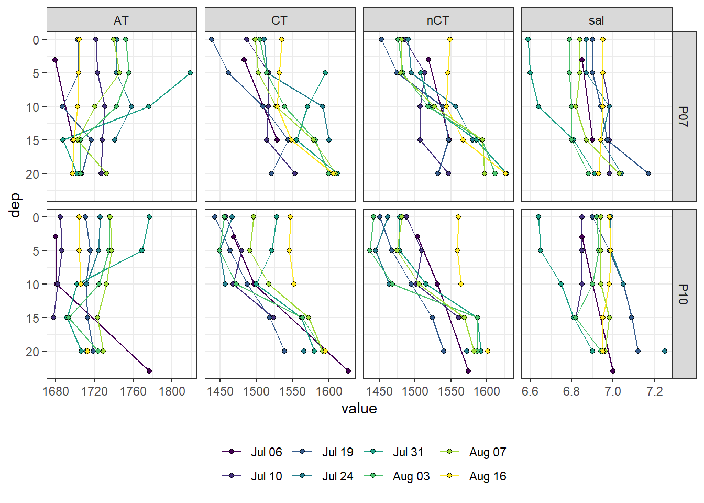
2.3.2 Mean
tb_long_mean <- tb_long %>%
mutate(dep_grid = as.numeric(as.character(cut(
dep,
breaks = seq(-2.5, 30, 5),
labels = seq(0, 25, 5)
)))) %>%
group_by(ID, date_time_ID, date_ID, dep_grid, var) %>%
summarise(value = mean(value, na.rm = TRUE)) %>%
ungroup()
p_AT <- tb_long_mean %>%
filter(dep_grid < parameters$max_dep, var == "AT") %>%
ggplot(aes(value, dep_grid)) +
annotate(
"rect",
xmin = AT_mean - AT_sd,
xmax = AT_mean + AT_sd,
ymin = -Inf,
ymax = Inf,
alpha = 0.3
) +
geom_vline(data = tb_fix, aes(xintercept = AT), linetype = 2) +
geom_path(aes(col = ID)) +
geom_point(aes(fill = ID), shape = 21) +
scale_y_reverse(sec.axis = dup_axis()) +
labs(x = expression(A[T] ~ (µmol ~ kg ^ {
-1
})),
y = "Depth (m)") +
scale_fill_viridis_d(guide = FALSE) +
scale_color_viridis_d(guide = FALSE) +
theme(axis.text.y.right = element_blank(),
axis.title.y.right = element_blank())
p_CT <- tb_long_mean %>%
filter(dep_grid < parameters$max_dep, var == "CT") %>%
ggplot(aes(value, dep_grid)) +
geom_path(aes(col = ID)) +
geom_point(aes(fill = ID), shape = 21) +
scale_y_reverse(sec.axis = dup_axis()) +
labs(x = expression(C[T] ~ (µmol ~ kg ^ {
-1
})),
y = "Depth (m)") +
scale_fill_viridis_d(guide = FALSE) +
scale_color_viridis_d(guide = FALSE) +
theme(axis.text.y = element_blank(),
axis.title.y = element_blank())
p_nCT <- tb_long_mean %>%
filter(dep_grid < parameters$max_dep, var == "nCT") %>%
ggplot(aes(value, dep_grid)) +
geom_path(aes(col = ID)) +
geom_point(aes(fill = ID), shape = 21) +
scale_y_reverse(sec.axis = dup_axis()) +
labs(x = expression(nC[T] ~ (µmol ~ kg ^ {
-1
})),
y = "Depth (m)") +
scale_fill_viridis_d(labels = cruise_dates$date_ID) +
scale_color_viridis_d(labels = cruise_dates$date_ID) +
theme(
axis.text.y = element_blank(),
axis.title.y = element_blank(),
legend.title = element_blank()
)
p_AT + p_CT + p_nCT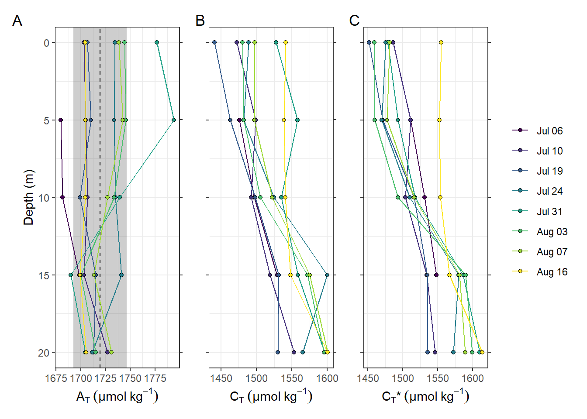
ggsave(
here::here(
"output/Plots/Figures_publication/appendix",
"tb_profiles.pdf"
),
width = 180,
height = 80,
dpi = 300,
units = "mm"
)
ggsave(
here::here(
"output/Plots/Figures_publication/appendix",
"tb_profiles.png"
),
width = 180,
height = 80,
dpi = 300,
units = "mm"
)
rm(tb_long_mean, p_AT, p_CT, p_nCT, tb_fix)2.4 Surface time series
tb_surface <- tb_long %>%
filter(dep < parameters$surface_dep) %>%
group_by(ID, date_time_ID, var, station) %>%
summarise(value = mean(value, na.rm = TRUE)) %>%
ungroup()
tb_surface_station_mean <- tb_long %>%
filter(dep < parameters$surface_dep) %>%
group_by(ID, date_time_ID, var) %>%
summarise(value_mean = mean(value, na.rm = TRUE),
value_sd = sd(value, na.rm = TRUE)) %>%
ungroup()
tb_long %>%
filter(dep < 11) %>%
ggplot() +
geom_line(data = tb_surface, aes(date_time_ID, value, col = "Individual")) +
geom_line(data = tb_surface_station_mean, aes(date_time_ID, value_mean, col =
"Both (mean)")) +
geom_point(aes(date_time_ID, value, fill = dep), shape = 21) +
scale_fill_scico(palette = "oslo",
direction = -1,
name = "Depth (m)") +
scale_color_brewer(palette = "Set1", name = "Station surface mean") +
scale_x_datetime(breaks = "week", date_labels = "%d %b") +
facet_grid(var ~ station, scales = "free_y") +
labs(x = "Mean transect date")
Time series of bottle data. Shown are mean values of samples collected at water depths < 10m (usually collected at 0 and 5 m).
rm(tb_long, tb_surface, tb)Important notes: - nCT drop and temporal patterns agree well with those found in the nCT time series derived from pCO2 measurements (below).
3 nCT profiles
3.1 Calculation from pCO2
Alkalinity normalized CT (nCT) profiles were calculated from sensor pCO2 and T profiles, and constant salinity and alkalinity values. Note that the impact of fixed vs. measured salinity has only a negligible impact on nCT profiles.
tm_profiles <- tm_profiles %>%
mutate(
nCT = carb(
24,
var1 = pCO2,
var2 = AT_mean * 1e-6,
S = sal_mean,
T = tem,
P = dep / 10,
k1k2 = "m10",
kf = "dg",
ks = "d",
gas = "insitu"
)[, 16] * 1e6
)
tm_profiles <- tm_profiles %>%
mutate(
nCT_test = carb(
24,
var1 = pCO2,
var2 = (AT_mean + 2*AT_sd) * 1e-6,
S = sal_mean,
T = tem,
P = dep / 10,
k1k2 = "m10",
kf = "dg",
ks = "d",
gas = "insitu"
)[, 16] * 1e6
)
tm_profiles %>%
write_csv(
here::here(
"data/intermediate/_merged_data_files/CT_dynamics",
"tm_profiles.csv"
)
)3.2 Plot all profiles
tm_profiles <- tm_profiles %>%
arrange(date_time_ID)
p_tem <-
tm_profiles %>%
ggplot(aes(tem, dep, col = ID, group = interaction(station, ID))) +
geom_path() +
scale_y_reverse(expand = c(0, 0)) +
labs(x = "Temperature (\u00B0C)",
y = "Depth (m)") +
scale_color_viridis_d(guide = FALSE)
p_pCO2 <-
tm_profiles %>%
ggplot(aes(pCO2, dep, col = ID, group = interaction(station, ID))) +
geom_path() +
scale_y_reverse(expand = c(0, 0)) +
labs(x = expression(pCO[2] ~ (µatm))) +
scale_color_viridis_d(guide = FALSE) +
theme(
axis.text.y = element_blank(),
axis.title.y = element_blank(),
axis.ticks.y = element_blank()
)
p_nCT <-
tm_profiles %>%
ggplot(aes(nCT, dep, col = ID, group = interaction(station, ID))) +
geom_path() +
scale_y_reverse(expand = c(0, 0)) +
labs(x = expression(nC[T] ~ (µmol ~ kg ^ {
-1
}))) +
scale_color_viridis_d(labels = cruise_dates$date_ID) +
theme(
legend.title = element_blank(),
axis.text.y = element_blank(),
axis.ticks.y = element_blank(),
axis.title.y = element_blank()
)
p_tem + p_pCO2 + p_nCT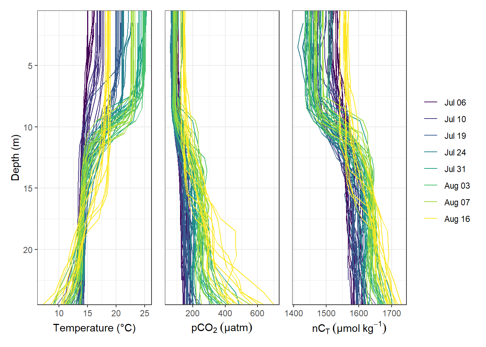
ggsave(
here::here(
"output/Plots/Figures_publication/article",
"profiles_all.pdf"
),
width = 180,
height = 80,
dpi = 300,
units = "mm"
)
ggsave(
here::here(
"output/Plots/Figures_publication/article",
"profiles_all.png"
),
width = 180,
height = 80,
dpi = 300,
units = "mm"
)
rm(p_tem, p_pCO2, p_nCT)3.3 Mean profiles
Mean vertical profiles were calculated for each cruise day (ID).
tm_profiles_ID_mean <- tm_profiles %>%
select(-c(station, lat, lon, pCO2_corr, date_time)) %>%
group_by(ID, date_time_ID, dep) %>%
summarise_all(list(mean), na.rm = TRUE) %>%
ungroup()
tm_profiles_ID_sd <- tm_profiles %>%
select(-c(station, lat, lon, pCO2_corr, date_time)) %>%
group_by(ID, date_time_ID, dep) %>%
summarise_all(list(sd), na.rm = TRUE) %>%
ungroup()
tm_profiles_ID_sd_long <- tm_profiles_ID_sd %>%
pivot_longer(sal:nCT_test, names_to = "var", values_to = "sd")
tm_profiles_ID_mean_long <- tm_profiles_ID_mean %>%
pivot_longer(sal:nCT_test, names_to = "var", values_to = "value")
tm_profiles_ID_long_test <-
inner_join(tm_profiles_ID_mean_long, tm_profiles_ID_sd_long)
tm_profiles_ID_long <- tm_profiles_ID_long_test %>%
filter(var != "nCT_test")
tm_profiles_ID_mean_test <- tm_profiles_ID_mean
tm_profiles_ID_mean_test <- tm_profiles_ID_mean_test %>%
mutate(nCT_delta = nCT - nCT_test)
tm_profiles_ID_mean <- tm_profiles_ID_mean %>%
select(-nCT_test)
tm_profiles_ID_mean %>%
write_csv(here::here("data/intermediate/_merged_data_files/CT_dynamics", "tm_profiles_ID.csv"))
rm(
tm_profiles_ID_sd_long,
tm_profiles_ID_sd,
tm_profiles_ID_mean_long,
tm_profiles_ID_mean
)tm_profiles_ID_long %>%
ggplot(aes(value, dep, col = ID)) +
geom_point() +
geom_path() +
scale_y_reverse() +
scale_color_viridis_d() +
facet_wrap( ~ var, scales = "free_x")Mean vertical profiles per cruise day across all stations.
3.3.1 nCT sensitivity to AT
tm_profiles_ID_mean_test %>%
ggplot(aes(nCT_delta - mean(nCT_delta), dep, col = ID)) +
geom_point() +
geom_path() +
scale_y_reverse() +
scale_color_viridis_d()Mean vertical profiles per cruise day across all stations.
all <- tm_profiles_ID_long %>%
filter(var %in% c("nCT", "tem")) %>%
rename(group = ID)
tm_profiles_ID_long %>%
filter(var %in% c("nCT", "tem")) %>%
ggplot() +
geom_path(data = all, aes(value, dep, group = group)) +
geom_ribbon(aes(
xmin = value - sd,
xmax = value + sd,
y = dep,
fill = ID
), alpha = 0.5) +
geom_path(aes(value, dep, col = ID)) +
scale_y_reverse() +
scale_color_viridis_d() +
scale_fill_viridis_d() +
facet_grid(ID ~ var, scales = "free_x")Mean vertical profiles per cruise day across all stations plotted indivdually. Ribbons indicate the standard deviation observed across all profiles at each depth and transect.
rm(all)Important notes:
- the standard deviation of CT in the upper 10m increases on June 30.
3.4 Individual profiles
CT, pCO2, S, and T profiles were plotted individually pdf here and grouped by ID pdf here. The later gives an idea of the differences between stations at one point in time.
# tm_profiles_highres <- tm_profiles_highres %>%
# filter(phase == "down")
pdf(file=here::here("output/Plots/CT_dynamics",
"tm_profiles_pCO2_tem_sal_CT.pdf"), onefile = TRUE, width = 9, height = 5)
for(i_ID in unique(tm_profiles$ID)){
for(i_station in unique(tm_profiles$station)){
if (nrow(tm_profiles %>% filter(ID == i_ID, station == i_station)) > 0){
# i_ID <- unique(tm_profiles$ID)[1]
# i_station <- unique(tm_profiles$station)[1]
p_pCO2 <-
tm_profiles %>%
arrange(date_time) %>%
filter(ID == i_ID,
station == i_station) %>%
ggplot(aes(pCO2, dep, col="grid_RT"))+
geom_point(aes(pCO2_corr, dep, col="grid"))+
geom_point()+
geom_path()+
scale_y_reverse()+
scale_color_brewer(palette = "Set1")+
labs(y="Depth [m]", x="pCO2 [µatm]", title = str_c(i_ID," | ",i_station))+
coord_cartesian(xlim = c(0,200), ylim = c(30,0))+
theme_bw()+
theme(legend.position = "left")
p_tem <-
tm_profiles %>%
arrange(date_time) %>%
filter(ID == i_ID,
station == i_station) %>%
ggplot(aes(tem, dep))+
geom_point()+
geom_path()+
scale_y_reverse()+
labs(y="Depth [m]", x="Tem [°C]")+
coord_cartesian(xlim = c(14,26), ylim = c(30,0))+
theme_bw()
p_sal <-
tm_profiles %>%
arrange(date_time) %>%
filter(ID == i_ID,
station == i_station) %>%
ggplot(aes(sal, dep))+
geom_point()+
geom_path()+
scale_y_reverse()+
labs(y="Depth [m]", x="Tem [°C]")+
coord_cartesian(xlim = c(6.5,7.5), ylim = c(30,0))+
theme_bw()
p_nCT <-
tm_profiles %>%
arrange(date_time) %>%
filter(ID == i_ID,
station == i_station) %>%
ggplot(aes(nCT, dep))+
geom_point()+
geom_path()+
scale_y_reverse()+
labs(y="Depth [m]", x="nCT* [µmol/kg]")+
coord_cartesian(xlim = c(1400,1700), ylim = c(30,0))+
theme_bw()
print(
p_pCO2 + p_tem + p_sal + p_nCT
)
rm(p_pCO2, p_sal, p_tem, p_nCT)
}
}
}
dev.off()
rm(i_ID, i_station, tm_profiles_highres)tm_profiles_long <- tm_profiles %>%
select(-c(lat, lon, pCO2_corr)) %>%
pivot_longer(sal:nCT, values_to = "value", names_to = "var")
pdf(file=here::here("output/Plots/CT_dynamics",
"tm_profiles_ID_pCO2_tem_sal_CT.pdf"), onefile = TRUE, width = 9, height = 5)
for(i_ID in unique(tm_profiles$ID)){
#i_ID <- unique(tm_profiles$ID)[1]
sub_tm_profiles_long <- tm_profiles_long %>%
arrange(date_time) %>%
filter(ID == i_ID)
print(
sub_tm_profiles_long %>%
ggplot()+
geom_path(data = tm_profiles_long,
aes(value, dep, group=interaction(station, ID)), col="grey")+
geom_path(aes(value, dep, col=station))+
scale_y_reverse()+
labs(y="Depth [m]", title = str_c("ID: ", i_ID))+
theme_bw()+
facet_wrap(~var, scales = "free_x")
)
rm(sub_tm_profiles_long)
}
dev.off()
rm(i_ID, tm_profiles_long)3.5 Profiles of incremental changes
Changes of seawater vars at each depth are calculated from one cruise day to the next and divided by the number of days inbetween.
tm_profiles_ID_long <- tm_profiles_ID_long %>%
group_by(var, dep) %>%
arrange(date_time_ID) %>%
mutate(
date_time_ID_diff = as.numeric(date_time_ID - lag(date_time_ID)),
date_time_ID_ref = date_time_ID - (date_time_ID - lag(date_time_ID)) /
2,
value_diff = value - lag(value, default = first(value)),
value_diff_daily = value_diff / date_time_ID_diff,
value_cum = cumsum(value_diff)
) %>%
ungroup()tm_profiles_ID_long %>%
arrange(dep) %>%
ggplot(aes(value_diff_daily, dep, col = ID)) +
geom_vline(xintercept = 0) +
geom_point() +
geom_path() +
scale_y_reverse() +
scale_color_viridis_d() +
facet_wrap( ~ var, scales = "free_x") +
labs(x = "Change of value inbetween cruises per day")
3.6 Profiles of cumulative changes
Cumulative changes of seawater vars were calculated at each depth relative to the first cruise day on July 5.
tm_profiles_ID_long %>%
arrange(dep) %>%
ggplot(aes(value_cum, dep, col = ID)) +
geom_vline(xintercept = 0) +
geom_point() +
geom_path() +
scale_y_reverse() +
scale_color_viridis_d() +
facet_wrap( ~ var, scales = "free_x") +
labs(x = "Cumulative change of value")
Important notes:
- Salinity in the upper 10m decreases by >0.1 on June 30, and returns to average conditions already on Aug 02.
Cumulative positive and negative changes of seawater vars were calculated separately at each depth relative to the first cruise day on July 5.
tm_profiles_ID_long <- tm_profiles_ID_long %>%
mutate(sign = if_else(value_diff < 0, "neg", "pos")) %>%
group_by(var, dep, sign) %>%
arrange(date_time_ID) %>%
mutate(value_cum_sign = cumsum(value_diff)) %>%
ungroup()tm_profiles_ID_long %>%
arrange(dep) %>%
ggplot(aes(value_cum_sign, dep, col = ID)) +
geom_vline(xintercept = 0) +
geom_point() +
geom_path() +
scale_y_reverse() +
scale_color_viridis_d() +
scale_fill_viridis_d() +
facet_wrap( ~ interaction(sign, var), scales = "free_x", ncol = 4) +
labs(x = "Cumulative directional change of value")
4 Timeseries
4.1 Timeseries depth intervals
Mean seawater parameters were calculated for 5m depth intervals.
tm_profiles_ID_long_grid <- tm_profiles_ID_long %>%
mutate(dep = cut(dep, seq(0, 30, 5))) %>%
group_by(ID, date_time_ID, dep, var) %>%
summarise_all(list(mean), na.rm = TRUE)
tm_profiles_ID_long_grid %>%
ggplot(aes(date_time_ID, value, col = as.factor(dep))) +
geom_path() +
geom_point() +
scale_color_viridis_d(name = "Depth (m)") +
scale_x_datetime(breaks = "week", date_labels = "%d %b") +
facet_wrap( ~ var, scales = "free_y", ncol = 1) +
theme(axis.title.x = element_blank())
rm(tm_profiles_ID_long_grid)4.1.1 Test AT sensitivity
Mean seawater CT were calculated for 5m depth intervals based on two AT values.
tm_profiles_ID_long_grid <- tm_profiles_ID_long_test %>%
mutate(dep = cut(dep, seq(0, 30, 5))) %>%
group_by(ID, date_time_ID, dep, var) %>%
summarise_all(list(mean), na.rm = TRUE)
tm_profiles_ID_long_grid %>%
filter(var %in% c("nCT", "nCT_test")) %>%
ggplot(aes(date_time_ID, value, col = as.factor(dep))) +
geom_path() +
geom_point() +
scale_color_viridis_d(name = "Depth (m)") +
scale_x_datetime(breaks = "week", date_labels = "%d %b") +
facet_wrap( ~ var, scales = "free_y", ncol = 1) +
theme(axis.title.x = element_blank())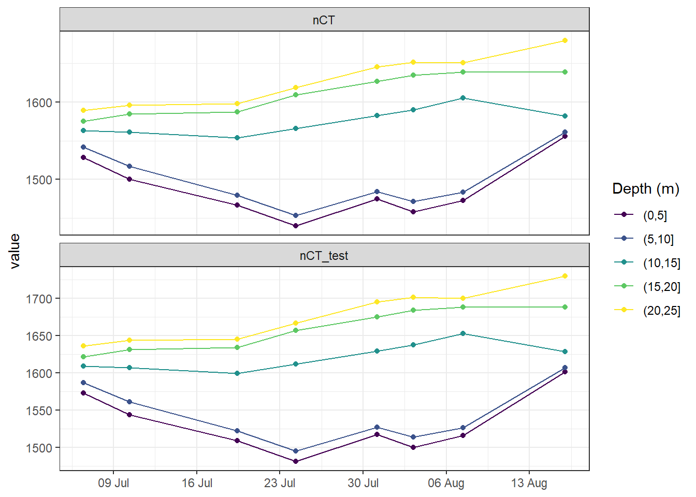
rm(tm_profiles_ID_long_grid)Calculate CT* changes for range of AT errors
nCT_sens <- tm_profiles %>%
filter(dep < parameters$surface_dep,
date_ID %in% c("Jul 06", "Jul 24")) %>%
select(date_ID, tem, pCO2) %>%
group_by(date_ID) %>%
summarise_all(mean, na.rm = TRUE) %>%
ungroup()
nCT_sens <- expand_grid(nCT_sens, factor = seq(-3, 3, 0.2))
nCT_sens <- nCT_sens %>%
mutate(AT = (AT_mean + factor * AT_sd) * 1e-6)
nCT_sens <- nCT_sens %>%
mutate(
nCT = carb(
24,
var1 = pCO2,
var2 = AT,
S = sal_mean,
T = tem,
k1k2 = "m10",
kf = "dg",
ks = "d",
gas = "insitu"
)[, 16] * 1e6
)
nCT_sens <- nCT_sens %>%
mutate(AT = AT * 1e6) %>%
select(date_ID, factor, AT, nCT) %>%
pivot_wider(names_from = "date_ID",
values_from = c("nCT"))
nCT_sens <- nCT_sens %>%
mutate(nCT_delta = `Jul 24` - `Jul 06`) %>%
select(factor, AT, nCT_delta)
nCT_delta_mean <- nCT_sens %>%
filter(factor == 0) %>%
pull(nCT_delta)
nCT_sens <- nCT_sens %>%
mutate(nCT_delta_offset = nCT_delta - nCT_delta_mean,
nCT_delta_offset_rel = nCT_delta / nCT_delta_mean *100,
AT_offset = AT - AT_mean)
nCT_delta_sd <- nCT_sens %>%
filter(factor == 1) %>%
pull(nCT_delta_offset)
nCT_sens %>%
ggplot(aes(AT_offset, nCT_delta_offset)) +
annotate(
"rect",
xmin = -AT_sd,
xmax = +AT_sd,
ymin = -Inf,
ymax = Inf,
alpha = 0.3
) +
annotate(
"rect",
xmin = -Inf,
xmax = Inf,
ymin = -nCT_delta_sd,
ymax = +nCT_delta_sd,
alpha = 0.3
) +
geom_vline(xintercept = 0, linetype = 2) +
geom_hline(yintercept = 0, linetype = 2) +
geom_line(col="red") +
scale_y_continuous(
expression(paste(
"absolute bias ", Delta ~ C[T], "*", ~ (µmol ~ kg ^ {
-1
})
)),
sec.axis = sec_axis(
~ . / nCT_delta_mean * 100,
name = expression(paste("relative bias ", Delta ~ C[T], "* (%)")),
breaks = seq(-10, 10, 1)
)
) +
scale_x_continuous(expression(paste("absolute bias ", A[T] ~ (µmol ~ kg ^ {
-1
}))),
sec.axis = sec_axis(~ . / AT_mean * 100,
name = expression(paste(
"relative bias ", A[T], " (%)")),
breaks = seq(-10, 10, 1)))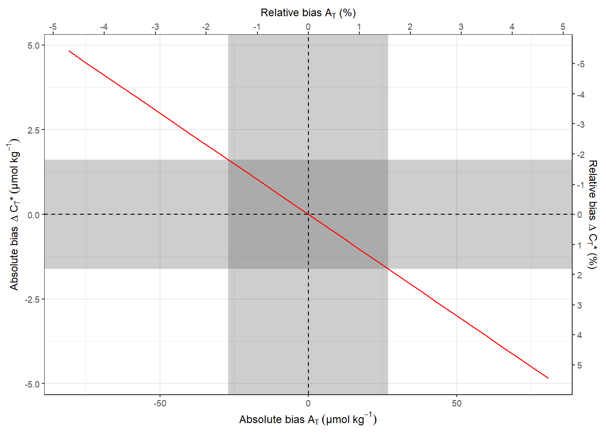
ggsave(
here::here(
"output/Plots/Figures_publication/appendix",
"nCT_sensitivity_to_AT.pdf"
),
width = 120,
height = 80,
dpi = 300,
units = "mm"
)
ggsave(
here::here(
"output/Plots/Figures_publication/appendix",
"nCT_sensitivity_to_AT.png"
),
width = 120,
height = 80,
dpi = 300,
units = "mm"
)4.2 Hovmoeller plots
4.2.1 Absolute values
bin_nCT <- 30
p_nCT_hov <- tm_profiles_ID_long %>%
filter(var == "nCT") %>%
ggplot() +
geom_contour_fill(aes(x = date_time_ID, y = dep, z = value),
breaks = MakeBreaks(bin_nCT),
col = "black") +
geom_point(
aes(x = date_time_ID, y = c(24.5)),
size = 3,
shape = 24,
fill = "white"
) +
scale_fill_scico(
breaks = MakeBreaks(bin_nCT),
guide = "colorstrip",
name = "nCT (µmol/kg)",
palette = "davos",
direction = -1
) +
scale_y_reverse() +
scale_x_datetime(breaks = "week", date_labels = "%d %b") +
theme_bw() +
labs(y = "Depth (m)") +
coord_cartesian(expand = 0) +
theme(axis.title.x = element_blank(),
legend.position = "left")
bin_Tem <- 2
p_tem_hov <- tm_profiles_ID_long %>%
filter(var == "tem") %>%
ggplot() +
geom_contour_fill(aes(x = date_time_ID, y = dep, z = value),
breaks = MakeBreaks(bin_Tem),
col = "black") +
geom_point(
aes(x = date_time_ID, y = c(24.5)),
size = 3,
shape = 24,
fill = "white"
) +
scale_fill_viridis_c(
breaks = MakeBreaks(bin_Tem),
guide = "colorstrip",
name = "Tem (°C)",
option = "inferno"
) +
scale_y_reverse() +
scale_x_datetime(breaks = "week", date_labels = "%d %b") +
labs(y = "Depth (m)") +
coord_cartesian(expand = 0) +
theme(axis.title.x = element_blank(),
legend.position = "left")
p_nCT_hov / p_tem_hov
Hovmoeller plotm of absolute changes in CT and temperature.
rm(p_nCT_hov, bin_nCT, p_tem_hov, bin_Tem)4.2.2 Incremental changes
bin_nCT <- 2.5
nCT_hov <- tm_profiles_ID_long %>%
filter(var == "nCT") %>%
ggplot() +
geom_contour_fill(
aes(x = date_time_ID_ref, y = dep, z = value_diff_daily),
breaks = MakeBreaks(bin_nCT),
col = "black"
) +
geom_point(
aes(x = date_time_ID, y = c(24.5)),
size = 3,
shape = 24,
fill = "white"
) +
scale_fill_divergent(breaks = MakeBreaks(bin_nCT),
guide = "colorstrip",
name = "nCT (µmol/kg)") +
scale_y_reverse() +
scale_x_datetime(breaks = "week", date_labels = "%d %b") +
theme_bw() +
labs(y = "Depth (m)") +
coord_cartesian(expand = 0) +
theme(axis.title.x = element_blank(),
axis.text.x = element_blank())
bin_Tem <- 0.1
Tem_hov <- tm_profiles_ID_long %>%
filter(var == "tem") %>%
ggplot() +
geom_contour_fill(
aes(x = date_time_ID_ref, y = dep, z = value_diff_daily),
breaks = MakeBreaks(bin_Tem),
col = "black"
) +
geom_point(
aes(x = date_time_ID, y = c(24.5)),
size = 3,
shape = 24,
fill = "white"
) +
scale_fill_divergent(breaks = MakeBreaks(bin_Tem),
guide = "colorstrip",
name = "Tem (°C)") +
scale_y_reverse() +
scale_x_datetime(breaks = "week", date_labels = "%d %b") +
theme_bw() +
labs(x = "", y = "Depth (m)") +
coord_cartesian(expand = 0)
nCT_hov / Tem_hov
Hovmoeller plotm of daily changes in CT and temperature. Note that calculated value of change (in contrast to absolute and cumulative values) are referred to the mean dates inbetween cruise, and are not extrapolated to the full observational period.
rm(nCT_hov, bin_nCT, Tem_hov, bin_Tem)4.2.3 Cumulative changes
bin_nCT <- 20
nCT_hov <- tm_profiles_ID_long %>%
filter(var == "nCT") %>%
ggplot() +
geom_contour_fill(
aes(x = date_time_ID, y = dep, z = value_cum),
breaks = MakeBreaks(bin_nCT),
col = "black"
) +
geom_point(
aes(x = date_time_ID, y = c(24.5)),
size = 3,
shape = 24,
fill = "white"
) +
scale_fill_divergent(breaks = MakeBreaks(bin_nCT),
guide = "colorstrip",
name = "nCT (µmol/kg)") +
scale_y_reverse() +
scale_x_datetime(breaks = "week", date_labels = "%d %b") +
theme_bw() +
labs(y = "Depth (m)") +
coord_cartesian(expand = 0) +
theme(axis.title.x = element_blank(),
axis.text.x = element_blank())
bin_Tem <- 2
Tem_hov <- tm_profiles_ID_long %>%
filter(var == "tem") %>%
ggplot() +
geom_contour_fill(
aes(x = date_time_ID, y = dep, z = value_cum),
breaks = MakeBreaks(bin_Tem),
col = "black"
) +
geom_point(
aes(x = date_time_ID, y = c(24.5)),
size = 3,
shape = 24,
fill = "white"
) +
scale_fill_divergent(breaks = MakeBreaks(bin_Tem),
guide = "colorstrip",
name = "Tem (°C)") +
scale_y_reverse() +
scale_x_datetime(breaks = "week", date_labels = "%d %b") +
theme_bw() +
labs(x = "", y = "Depth (m)") +
coord_cartesian(expand = 0)
nCT_hov / Tem_hov
Hovmoeller plotm of cumulative changes in CT and temperature.
rm(nCT_hov, bin_nCT, Tem_hov, bin_Tem)5 Depth-integration CT
A critical first step for the determination of net community production (NCP) is the integration of observed changes in nCT over depth. Two approaches were tested:
- Integration of changes in nCT over a predefined, fixed water depth
- Integration of changes in nCT over a mixed layer depth (MLD)
Both aproaches deliver depth-integrated, incremental changes of CT inbetween cruise dates. Those were summed up to derive a trajectory of cummulative integrated nCT changes.
5.1 Fixed depths approach
Incremental and cumulative nCT changes inbetween cruise dates were integrated across the water colums down to predefined depth limits. This was done separately for observed positive/negative changes in CT, as well as for the total observed changes.
Predefined integration depth levels in metres are: 9, 10, 11, 12, 13
5.1.1 Calculate inCT
inCT_grid_sign <- tm_profiles_ID_long %>%
select(ID, date_time_ID, date_time_ID_ref) %>%
unique() %>%
expand_grid(sign = c("pos", "neg"))
inCT_grid_total <- tm_profiles_ID_long %>%
select(ID, date_time_ID, date_time_ID_ref) %>%
unique() %>%
expand_grid(sign = c("total"))
for (i_dep in parameters$fixed_integration_depths) {
inCT_sign_temp <- tm_profiles_ID_long %>%
filter(var == "nCT", dep < i_dep) %>%
mutate(sign = if_else(ID == "180705" & dep == 0.5, "neg", sign)) %>%
group_by(ID, date_time_ID, date_time_ID_ref, sign) %>%
summarise(nCT_i_diff = sum(value_diff)/1000) %>%
ungroup()
inCT_sign_temp <- inCT_sign_temp %>%
group_by(sign) %>%
arrange(date_time_ID) %>%
mutate(nCT_i_cum = cumsum(nCT_i_diff)) %>%
ungroup()
inCT_sign_temp <- full_join(inCT_sign_temp, inCT_grid_sign) %>%
arrange(sign, date_time_ID) %>%
fill(nCT_i_cum)
inCT_total_temp <- tm_profiles_ID_long %>%
filter(var == "nCT", dep < i_dep) %>%
group_by(ID, date_time_ID, date_time_ID_ref) %>%
summarise(nCT_i_diff = sum(value_diff)/1000) %>%
ungroup()
inCT_total_temp <- inCT_total_temp %>%
arrange(date_time_ID) %>%
mutate(nCT_i_cum = cumsum(nCT_i_diff)) %>%
ungroup() %>%
mutate(sign = "total")
inCT_total_temp <- full_join(inCT_total_temp, inCT_grid_total) %>%
arrange(sign, date_time_ID) %>%
fill(nCT_i_cum)
inCT_temp <- bind_rows(inCT_sign_temp, inCT_total_temp) %>%
mutate(i_dep = i_dep)
if (exists("inCT")) {
inCT <- bind_rows(inCT, inCT_temp)
} else {inCT <- inCT_temp}
rm(inCT_temp, inCT_sign_temp, inCT_total_temp)
}
rm(inCT_grid_sign, inCT_grid_total)
inCT <- inCT %>%
mutate(i_dep = as.factor(i_dep))
inCT_fixed_dep <- inCT
rm(inCT, i_dep)5.1.2 Time series
inCT_fixed_dep %>%
ggplot() +
geom_point(data = cruise_dates, aes(date_time_ID, 0), shape = 21) +
geom_col(
aes(date_time_ID_ref, nCT_i_diff, fill = i_dep),
position = "dodge",
alpha = 0.3
) +
geom_line(aes(date_time_ID, nCT_i_cum, col = i_dep)) +
scale_color_viridis_d(name = "Depth limit (m)") +
scale_fill_viridis_d(name = "Depth limit (m)") +
scale_x_datetime(breaks = "week", date_labels = "%d %b") +
labs(y = "inCT (mol/m2)", x = "") +
facet_grid(sign ~ ., scales = "free_y", space = "free_y") +
theme_bw()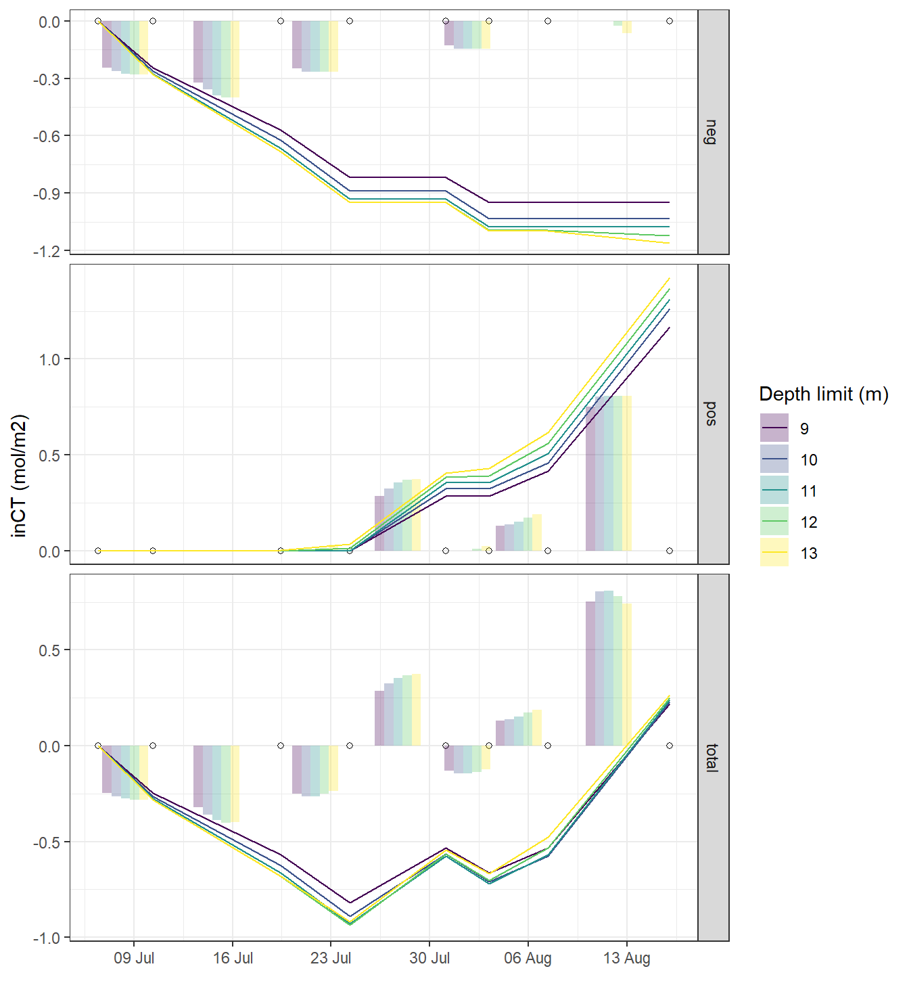
5.2 MLD approach
As an alternative to fixed depth levels, vertical integration as low as the mixed layer depth was tested.
5.2.1 Density calculation
Seawater density Rho was determined from S, T, and p according to TEOS-10.
tm_profiles <- tm_profiles %>%
mutate(rho = swSigma(
salinity = sal,
temperature = tem,
pressure = dep / 10
))5.2.2 Density profiles
tm_profiles_ID_mean_hydro <- tm_profiles %>%
select(-c(station, lat, lon, pCO2_corr, pCO2, nCT, date_time)) %>%
group_by(ID, date_time_ID, date_ID, dep) %>%
summarise_all(list(mean), na.rm = TRUE) %>%
ungroup()
tm_profiles_ID_sd_hydro <- tm_profiles %>%
select(-c(station, lat, lon, pCO2_corr, pCO2, nCT, date_time)) %>%
group_by(ID, date_time_ID, date_ID, dep) %>%
summarise_all(list(sd), na.rm = TRUE) %>%
ungroup()
tm_profiles_ID_sd_hydro_long <- tm_profiles_ID_sd_hydro %>%
pivot_longer(sal:rho, names_to = "var", values_to = "sd")
tm_profiles_ID_mean_hydro_long <- tm_profiles_ID_mean_hydro %>%
pivot_longer(sal:rho, names_to = "var", values_to = "value")
tm_profiles_ID_hydro_long <-
inner_join(tm_profiles_ID_mean_hydro_long,
tm_profiles_ID_sd_hydro_long)
tm_profiles_ID_hydro <- tm_profiles_ID_mean_hydro
rm(
tm_profiles_ID_mean_hydro_long,
tm_profiles_ID_mean_hydro,
tm_profiles_ID_sd_hydro_long,
tm_profiles_ID_sd_hydro
)tm_profiles_ID_hydro_long %>%
ggplot(aes(value, dep, col = ID)) +
geom_point() +
geom_path() +
scale_y_reverse() +
scale_color_viridis_d() +
facet_wrap( ~ var, scales = "free_x")Mean vertical profiles per cruise day across all stations.
5.2.3 MLD calculation
Mixed layer depth (MLD) was determined based on the difference between density at the surface and at depth, for a range of density criteria
tm_profiles_ID_hydro <- expand_grid(tm_profiles_ID_hydro, rho_lim = c(0.1,0.2,0.5))
MLD <- tm_profiles_ID_hydro %>%
arrange(dep) %>%
group_by(ID, date_time_ID, rho_lim) %>%
mutate(d_rho = rho - first(rho)) %>%
filter(d_rho > rho_lim) %>%
summarise(MLD = min(dep)) %>%
ungroup()5.2.4 Daily density profiles
tm_profiles_ID_hydro <-
full_join(tm_profiles_ID_hydro, MLD)
tm_profiles_ID_hydro %>%
arrange(dep) %>%
ggplot(aes(rho, dep)) +
geom_hline(aes(yintercept = MLD, col = as.factor(rho_lim))) +
geom_path() +
scale_y_reverse() +
scale_color_brewer(palette = "Set1", name = "Rho limit") +
facet_wrap( ~ ID) +
theme_bw()Mean density profiles and MLD per cruise dates (ID).
5.2.5 MLD timeseries
MLD %>%
ggplot(aes(date_time_ID, MLD, col = as.factor(rho_lim))) +
geom_hline(yintercept = 0) +
geom_point() +
geom_path() +
scale_color_brewer(palette = "Set1", name = "Rho limit") +
scale_y_reverse() +
scale_x_datetime(breaks = "week", date_labels = "%d %b") +
labs(x = "")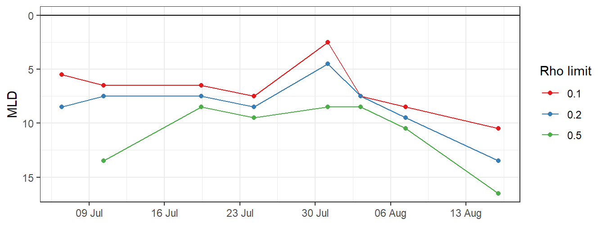
5.2.6 inCT calculation
inCT <- tm_profiles_ID_long %>%
filter(var == "nCT")
inCT <- full_join(inCT, MLD)
inCT <- inCT %>%
filter(dep <= MLD)
inCT <- inCT %>%
group_by(ID, date_time_ID, date_time_ID_ref, rho_lim) %>%
summarise(nCT_i_diff = sum(value_diff)/1000) %>%
ungroup()
inCT <- inCT %>%
group_by(rho_lim) %>%
arrange(date_time_ID) %>%
mutate(nCT_i_cum = cumsum(nCT_i_diff)) %>%
ungroup()
inCT <- inCT %>%
mutate(rho_lim = as.factor(rho_lim))
inCT_MLD <- inCT
rm(inCT, MLD, tm_profiles_ID_hydro, tm_profiles_ID_hydro_long)5.2.7 Time series
inCT_MLD %>%
ggplot() +
geom_point(data = cruise_dates, aes(date_time_ID, 0), shape = 21) +
geom_col(
aes(date_time_ID_ref, nCT_i_diff, fill = rho_lim),
position = "dodge",
alpha = 0.3
) +
geom_line(aes(date_time_ID, nCT_i_cum, col = rho_lim)) +
scale_color_viridis_d(name = "Rho limit") +
scale_fill_viridis_d(name = "Rho limit") +
scale_x_datetime(breaks = "week", date_labels = "%d %b") +
labs(y = "inCT [mol/m2]", x = "") +
theme_bw()5.3 Comparison of approaches
In the following, all cummulative iCT trajectories are displayed. Highlighted are those obtained for the fixed depth approach with 10 m limit, and the MLD approach with a high density threshold of 0.5 kg/m3.
inCT <- full_join(inCT_fixed_dep, inCT_MLD)
inCT <- inCT %>%
mutate(group = paste(
as.character(sign),
as.character(i_dep),
as.character(rho_lim)
))
inCT %>%
arrange(date_time_ID) %>%
ggplot() +
geom_hline(yintercept = 0) +
geom_point(data = cruise_dates, aes(date_time_ID, 0), shape = 21) +
geom_line(aes(date_time_ID, nCT_i_cum,
group = group), col = "grey") +
geom_line(
data = inCT_fixed_dep %>% filter(i_dep == 12, sign == "total"),
aes(date_time_ID, nCT_i_cum, col = "12m - total")
) +
geom_line(data = inCT_MLD %>% filter(rho_lim == 0.1),
aes(date_time_ID, nCT_i_cum, col = "MLD - 0.1")) +
scale_color_brewer(palette = "Set1", name = "") +
scale_x_datetime(breaks = "week", date_labels = "%d %b") +
labs(y = "inCT [mol/m2]", x = "")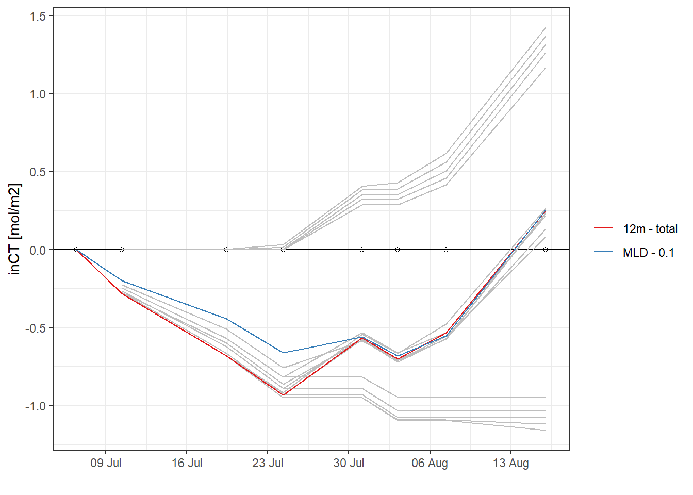
rm(inCT, inCT_MLD)6 NCP determination
In order to derive an estimate of the net community production NCP (which is equivalent to the formed organic matter that can be exported from the investigated surface layer), two steps are required:
- decision about the most appropiate iCT trajectory
- correction of quantifyable CO2 fluxes in and out of the investigated water volume during the period of interest, this includes:
- Air-sea CO2 fluxes
- CO2 fluxes due to vertical mixing
- CO2 fluxes due to lateral transport of water masses (not corrected here)
6.1 Best iCT estimate
To determine the optimum depth for the nCT integration we investigated the vertical distribution of cumulative temperature and nCT changes on the peak of the productivity signal on June 23:
tm_profiles_ID_long_180723 <- tm_profiles_ID_long %>%
filter(ID == 180723,
var == "nCT")
p_tm_profiles_ID_long <- tm_profiles_ID_long_180723 %>%
arrange(dep) %>%
ggplot(aes(value_cum, dep)) +
geom_vline(xintercept = 0) +
geom_hline(yintercept = 12, col = "red") +
geom_point() +
geom_path() +
scale_y_reverse() +
labs(x = "Cumulative change of nCT on July 23 (180723)") +
theme(legend.position = "left")
tm_profiles_ID_long_180723_dep <- tm_profiles_ID_long_180723 %>%
select(dep, value_cum) %>%
filter(value_cum < 0) %>%
arrange(dep) %>%
mutate(
value_cum_i = sum(value_cum),
value_cum_dep = cumsum(value_cum),
value_cum_i_rel = value_cum_dep / value_cum_i * 100
)
p_tm_profiles_ID_long_rel <- tm_profiles_ID_long_180723_dep %>%
ggplot(aes(value_cum_i_rel, dep)) +
geom_hline(yintercept = 12, col = "red") +
geom_vline(xintercept = 90) +
geom_point() +
geom_line() +
scale_y_reverse(limits = c(25, 0)) +
scale_x_continuous(breaks = seq(0, 100, 10)) +
labs(y = "Depth (m)", x = "Relative contribution on July 23") +
theme_bw()
p_tm_profiles_ID_long + p_tm_profiles_ID_long_rel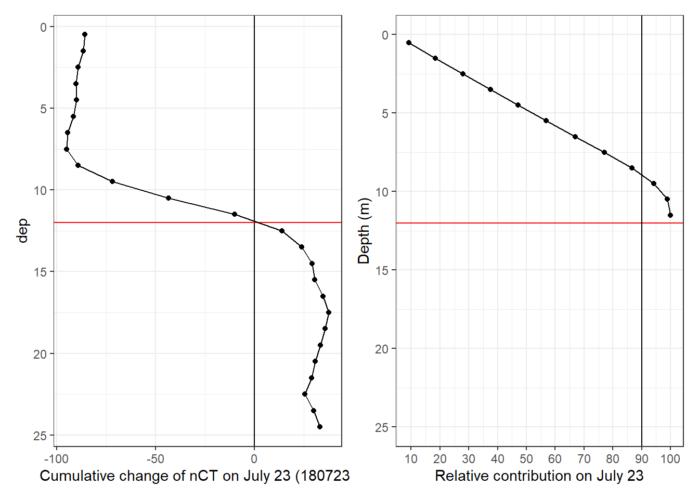
rm(
tm_profiles_ID_long_180723,
tm_profiles_ID_long_180723_dep,
p_tm_profiles_ID_long,
p_tm_profiles_ID_long_rel
)tm_profiles_ID_long_180723 <- tm_profiles_ID_long %>%
filter(ID == 180723,
var == "tem")
p_tm_profiles_ID_long <- tm_profiles_ID_long_180723 %>%
arrange(dep) %>%
ggplot(aes(value_cum, dep)) +
geom_vline(xintercept = 0) +
geom_hline(yintercept = 12, col = "red") +
geom_point() +
geom_path() +
scale_y_reverse() +
labs(x = "Cumulative change of Temp on July 23") +
theme(legend.position = "left")
tm_profiles_ID_long_180723_dep <- tm_profiles_ID_long_180723 %>%
select(dep, value_cum) %>%
filter(value_cum > 0) %>%
arrange(dep) %>%
mutate(
value_cum_i = sum(value_cum),
value_cum_dep = cumsum(value_cum),
value_cum_i_rel = value_cum_dep / value_cum_i * 100
)
p_tm_profiles_ID_long_rel <- tm_profiles_ID_long_180723_dep %>%
ggplot(aes(value_cum_i_rel, dep)) +
geom_hline(yintercept = 12, col = "red") +
geom_vline(xintercept = 90) +
geom_point() +
geom_line() +
scale_y_reverse(limits = c(25, 0)) +
scale_x_continuous(breaks = seq(0, 100, 10)) +
labs(y = "Depth (m)", x = "Relative contribution on July 23") +
theme_bw()
p_tm_profiles_ID_long + p_tm_profiles_ID_long_rel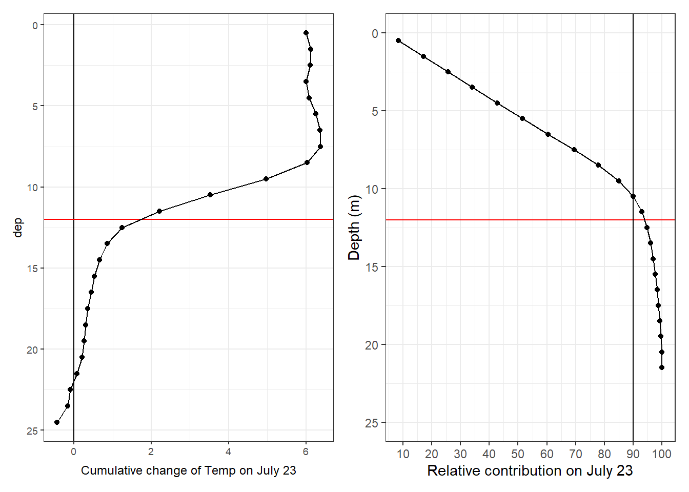
rm(
tm_profiles_ID_long_180723,
tm_profiles_ID_long_180723_dep,
p_tm_profiles_ID_long,
p_tm_profiles_ID_long_rel
)The cummulative iCT trajectory determined by integration of CT to a fixed water depth of 12 m was used for NCP calculation for the following reasons:
- During the first productivity pulse that lasted until July 23:
- no negative nCT changes were detected below that depth
- cumulative nCT switch sign at that depth
- 95% of the cumulative warming signal appears across that depth
- MLD were too shallow to cover all observed negative CT changes
6.2 Air-Sea CO2 flux
6.2.1 Surface water data
The cruise mean pCO2 recorded in profiling-mode (stations only) and depths < 6m was used for gas exchange calcualtions.
tm_profiles_surface_long <- tm_profiles %>%
filter(dep < parameters$surface_dep) %>%
select(date_time = date_time_ID, ID, tem, pCO2 = pCO2, nCT) %>%
pivot_longer(tem:nCT, values_to = "value", names_to = "var")
tm_profiles_surface_long_ID <- tm_profiles_surface_long %>%
group_by(ID, date_time, var) %>%
summarise_all(list( ~ mean(.), ~ sd(.), ~ min(.), ~ max(.))) %>%
ungroup()
rm(tm_profiles_surface_long)
p_pCO2_surf <- tm_profiles_surface_long_ID %>%
filter(var == "pCO2") %>%
ggplot(aes(x = date_time)) +
geom_ribbon(aes(ymin = mean - sd, ymax = mean + sd), alpha = 0.2) +
geom_path(aes(y = mean)) +
geom_point(aes(y = mean)) +
scale_fill_discrete(guide = FALSE) +
scale_x_datetime(date_breaks = "week",
sec.axis = dup_axis()) +
labs(y = expression(atop(pCO[2], (mu * atm))),
title = "Surface water observations") +
theme(axis.title.x = element_blank(),
axis.text.x = element_blank())
p_tem_surf <- tm_profiles_surface_long_ID %>%
filter(var == "tem") %>%
ggplot(aes(x = date_time)) +
geom_ribbon(aes(ymin = mean - sd, ymax = mean + sd), alpha = 0.2) +
geom_path(aes(y = mean)) +
geom_point(aes(y = mean)) +
scale_fill_discrete(guide = FALSE) +
scale_x_datetime(date_breaks = "week",
sec.axis = dup_axis()) +
labs(y = "temp \n (\u00B0C)") +
theme(axis.title.x = element_blank(),
axis.text.x = element_blank())
p_nCT_surf <-
tm_profiles_surface_long_ID %>%
filter(var == "nCT") %>%
ggplot() +
geom_point(data = tb_surface_station_mean %>%
filter(var == "nCT"),
aes(x = date_time_ID,
y = value_mean,
color = "discrete")) +
geom_linerange(
data = tb_surface_station_mean %>%
filter(var == "nCT"),
aes(
x = date_time_ID,
ymin = value_mean - value_sd,
ymax = value_mean + value_sd,
color = "discrete"
)
) +
geom_ribbon(aes(
x = date_time,
ymin = mean - sd,
ymax = mean + sd
), alpha = 0.2) +
geom_path(aes(x = date_time, y = mean)) +
geom_point(aes(x = date_time, y = mean)) +
scale_color_manual(values = "red") +
scale_x_datetime(date_breaks = "week",
sec.axis = dup_axis()) +
labs(y = expression(atop(nC[T],
(mu * mol ~ kg ^ {
-1
})))) +
theme(
axis.title.x = element_blank(),
axis.text.x = element_blank(),
legend.position = c(0.35, 0.75),
legend.title = element_blank(),
legend.direction = "horizontal",
legend.background = element_rect(fill = "transparent"),
legend.key = element_rect(colour = "black", fill = "white")
)
p_pCO2_surf + p_tem_surf + p_nCT_surf +
plot_layout(ncol = 1)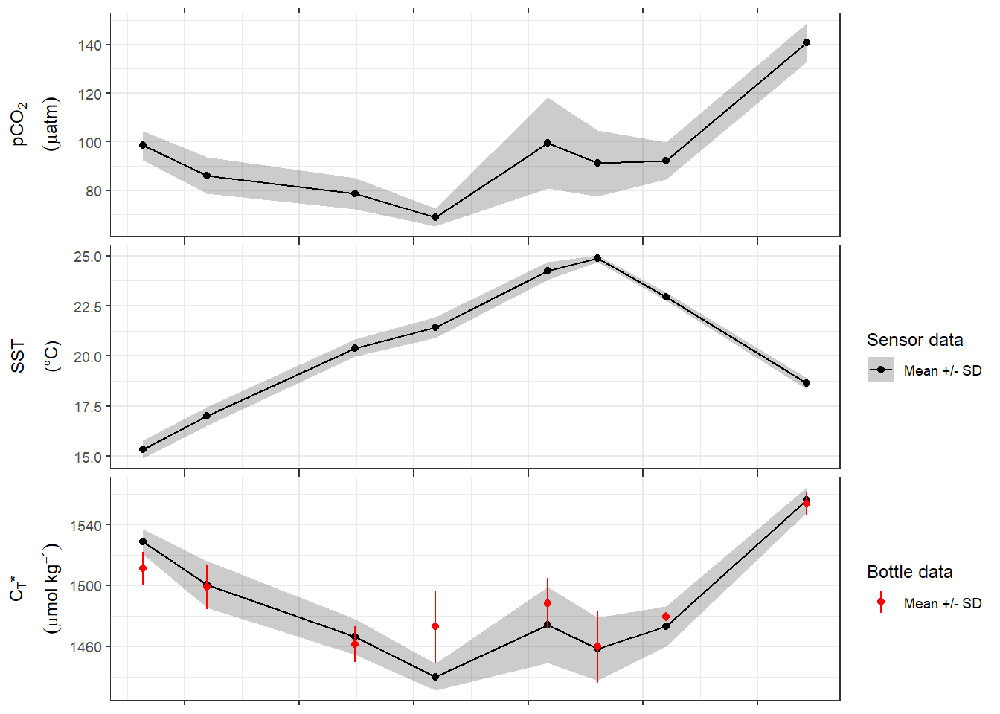
start <- min(tm_profiles_surface_long_ID$date_time)
end <- max(tm_profiles_surface_long_ID$date_time)6.2.2 Wind and atm. pCO2
Metrological data were recorded on the flux tower located on Ostergarnsholm island.
og <-
read_csv(here::here("data/intermediate/_summarized_data_files",
"og.csv"))
og <- og %>%
filter(date_time > start,
date_time < end)
rm(end, start)6.2.3 Conversion to U10
Wind speed was determined at 12 and converted to 10 m above sea level, to be used for gas exchange calculation.
og <- og %>%
mutate(wind = wind.scale.base(wnd = wind, wnd.z = 12))Data sets for atmospheric and seawater observations were merged and interpolated to a common time stamp.
tm_profiles_surface_ID <- tm_profiles_surface_long_ID %>%
filter(var %in% c("pCO2", "tem")) %>%
select(date_time:mean) %>%
pivot_wider(names_from = "var", values_from = "mean")
rm(tm_profiles_surface_long_ID)
tm_og <- full_join(og, tm_profiles_surface_ID) %>%
arrange(date_time)
tm_og <- tm_og %>%
mutate(
pCO2 = approxfun(date_time, pCO2)(date_time),
tem = approxfun(date_time, tem)(date_time),
wind = approxfun(date_time, wind)(date_time)
) %>%
filter(!is.na(pCO2_atm))
rm(tm_profiles_surface_ID, og)rolling_mean <- rollify( ~ mean(.x, na.rm = TRUE), window = 48)
tm_og <- tm_og %>%
mutate(wind_daily = rolling_mean(wind),
pCO2_atm_daily = rolling_mean(pCO2_atm))p_pCO2_atm <- tm_og %>%
ggplot(aes(x = date_time)) +
geom_path(aes(y = pCO2_atm)) +
scale_x_datetime(date_breaks = "week",
sec.axis = dup_axis()) +
labs(y = expression(atop(pCO["2,atm"], (mu * atm))),
title = "Atmospheric observations") +
theme(axis.title.x = element_blank(),
axis.text.x = element_blank())
p_wind <- tm_og %>%
ggplot(aes(x = date_time)) +
geom_path(aes(y = wind)) +
scale_x_datetime(date_breaks = "week",
sec.axis = dup_axis()) +
labs(y = expression(atop(windspeed, (m ~ s ^ {
-1
})))) +
theme(
axis.title.x = element_blank(),
axis.text.x = element_blank(),
legend.title = element_blank()
)
p_pCO2_atm + p_wind +
plot_layout(ncol = 1) +
plot_layout(guides = 'collect')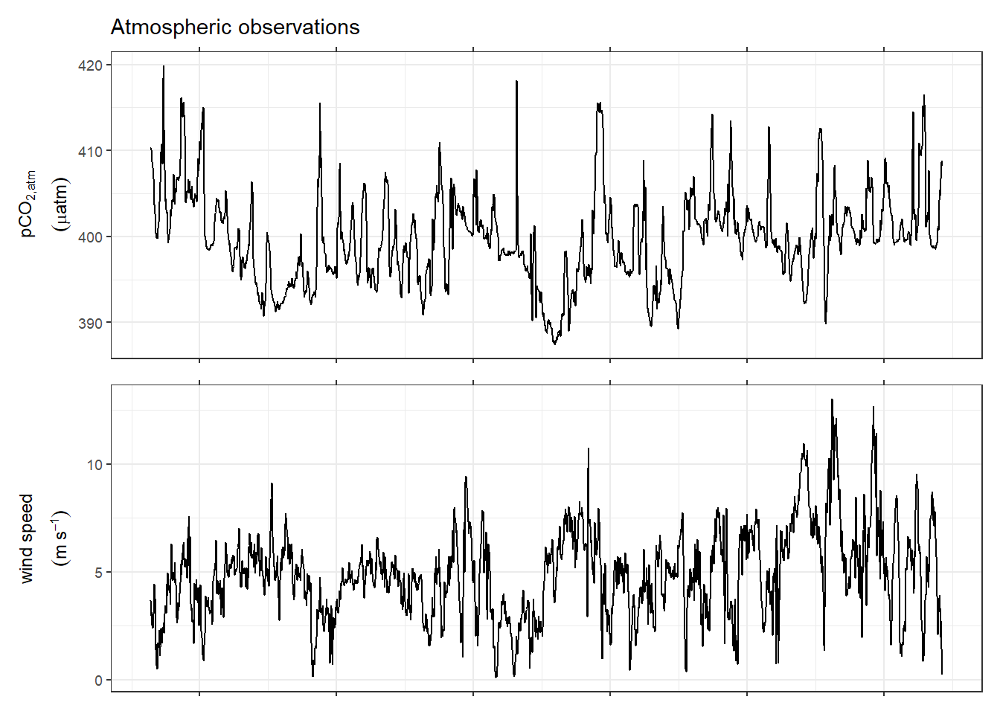
6.2.4 Air-sea fluxes
F = k * dCO2
with
dCO2 = K0 * dpCO2 and
k = coeff * U^2 * (660/Sc)^0.5
Unitm used here are:
dpCO2: µatm
K0: mol atm-1 kg-1
dCO2: µmol kg-1
wind speed U: m s-1
coeff for k calculation (eg 0.251 in W14): cm hr-1 (m s-1)-2
gas transfer velocities k: cm hr-1 (= 60 x 60 x 100 m s-1)
air sea CO2 flux F: mol m–2 d–1
conversion between the unit of k * dCO2 and F requires a factor of 10-5 * 24
Sc_W14 <- function(tem) {
2116.8 - 136.25 * tem + 4.7353 * tem ^ 2 - 0.092307 * tem ^ 3 + 0.0007555 * tem ^
4
}
# Sc_W14(20)
tm_og <- tm_og %>%
mutate(
dpCO2 = pCO2 - pCO2_atm,
dCO2 = dpCO2 * K0(S = 6.92, T = tem),
# W92 = gas_transfer(t = tem, u10 = wind, species = "CO2",
# method = "Wanninkhof1")* 60^2 * 100,
#k_SM18 = 0.24 * wind^2 * ((1943-119.6*tem + 3.488*tem^2 - 0.0417*tem^3) / 660)^(-0.5),
k = 0.251 * wind ^ 2 * (Sc_W14(tem) / 660) ^ (-0.5)
)
# pivot_longer(9:10, names_to = "k_para", values_to = "k_value")
# calculate flux F [mol m–2 d–1]
tm_og <- tm_og %>%
mutate(flux = k * dCO2 * 1e-5 * 24)
# flux_daily = rolling_mean(flux))
rm(Sc_W14)p_flux_daily <- tm_og %>%
ggplot(aes(x = date_time)) +
geom_path(aes(y = flux)) +
# geom_path(aes(y=flux_daily, col="24h"))+
# scale_color_brewer(palette = "Set1")+
scale_x_datetime(date_breaks = "week",
sec.axis = dup_axis()) +
labs(y = expression(atop(flux[daily], (mol ~ m ^ {
-2
} ~ d ^ {
-1
}))),
title = "Air-sea fluxes") +
theme(
axis.title.x = element_blank(),
axis.text.x = element_blank(),
legend.title = element_blank()
)# scale flux to time interval
tm_og <- tm_og %>%
mutate(scale = 24 * 2) %>%
mutate(flux_scale = flux / scale) %>%
arrange(date_time) %>%
mutate(flux_cum = cumsum(flux_scale)) %>%
ungroup()
p_flux_cum <- tm_og %>%
ggplot(aes(x = date_time)) +
geom_path(aes(y = flux_cum)) +
scale_fill_discrete(guide = FALSE) +
scale_x_datetime(date_breaks = "week",
sec.axis = dup_axis()) +
labs(y = expression(atop(flux[cum],
(mol ~ m ^ {
-2
})))) +
theme(axis.title.x = element_blank(),
axis.text.x = element_blank())
p_flux_daily + p_flux_cum +
plot_layout(ncol = 1)
6.3 iCT correction
The cumulative integrated nCT (inCT) time series obtained through integration across the upper 12m of the water column was used for further calculations of NCP.
Correction of inCT for air-sea CO2 fluxes will be based on estimates derived from observation with 30min measurement interval and calculation according to Wanninkhof (2014).
To derive an integrated NCP estimated, the observed change in inCT must be corrected for the air-sea flux of CO2. inCT was determined for the upper 12m of the water column. The MLD was always shallower 12m, except for the last cruise day. Therefore:
- Cumulative air-sea fluxes can be added completely to inCT before Aug 7.
- Between Aug 7 and the last cruise on Aug 15 it was assumed, that the CO2 flux was homogenously mixed down to the deepend thermocline at 17m. The flux correction applied to the upper 12m can therefore be scaled with a factor 12/17.
During the last cruise, deeper mixing up to 17m water depth was observed, resulting in increased inCT at 0-12 m and a decrease of inCT in 12-17m. The loss of nCT in 12-17m can be assumed to be entirely cause by mixing with low-nCT surface water. However, some of the observed nCT loss is balanced through nCT input attributable to the air-sea flux. Therefore, the observed loss, corrected for 5/17 of the air-sea-flux, was added to the integrated nCT changes in 0-12m.
# extract CT data for fixed depth approach, depth limit 10m
NCP <- inCT_fixed_dep %>%
filter(i_dep == parameters$i_dep_lim, sign == "total") %>%
select(-c(sign, i_dep))
rm(inCT_fixed_dep)
NCP <- NCP %>%
select(ID, date_time = date_time_ID, date_time_ID_ref, nCT_i_diff, nCT_i_cum)
# date of the second last cruise
date_180806 <- unique(NCP$date_time)[7]6.3.1 Air-sea fluxes
# calculate cumulative air-sea fluxes affecting surface water column
tm_og_flux <- tm_og %>%
mutate(
flux_scale = if_else(
date_time > date_180806,
parameters$i_dep_lim / parameters$i_dep_mix_lim * flux_scale,
flux_scale
)
) %>%
arrange(date_time) %>%
mutate(flux_cum = cumsum(flux_scale)) %>%
select(date_time, flux_cum)
# calculate cumulative air-sea fluxes affecting deepened mixed layer
tm_og_flux_dep <- tm_og %>%
filter(date_time > date_180806) %>%
mutate(
flux_scale =
(parameters$i_dep_mix_lim - parameters$i_dep_lim) / parameters$i_dep_mix_lim * flux_scale
) %>%
arrange(date_time) %>%
mutate(flux_cum = cumsum(flux_scale)) %>%
select(date_time, flux_cum)
NCP_flux <- full_join(NCP, tm_og_flux) %>%
arrange(date_time)
rm(tm_og_flux, NCP, tm_og)
# linear interpolation of cumulative changes to frequency of the flux estimates estimates
NCP_flux <- NCP_flux %>%
mutate(
nCT_i_cum = approxfun(date_time, nCT_i_cum)(date_time),
flux_cum = approxfun(date_time, flux_cum)(date_time)
) %>%
fill(flux_cum) %>%
mutate(nCT_i_flux_cum = nCT_i_cum + flux_cum)
# calculate cumulative fluxes inbetween cruises
NCP_flux_diff <- NCP_flux %>%
filter(!is.na(date_time_ID_ref)) %>%
mutate(flux_diff = flux_cum - lag(flux_cum, default = 0)) %>%
select(ID, date_time_ID_ref, observed = nCT_i_diff, flux = flux_diff) %>%
pivot_longer(cols = "observed":"flux",
names_to = "var",
values_to = "value_diff")6.3.2 Vertical mixing
The aim is to approximate the CT entrainment flux between Aug 06 and 15. The relevant profiles are:
tm_profiles_ID_long %>%
filter(ID %in% c("180806", "180815"),
var %in% c("nCT", "tem")) %>%
ggplot(aes(value, dep, col = ID)) +
geom_hline(yintercept = c(12, 17)) +
geom_point() +
geom_path() +
scale_y_reverse() +
scale_color_viridis_d() +
facet_wrap( ~ var, scales = "free_x")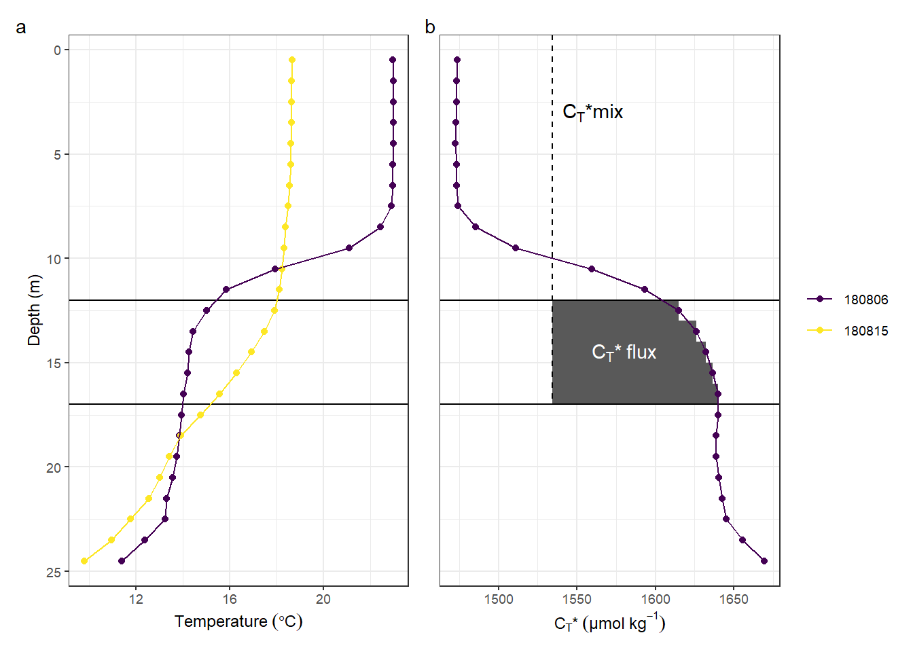
The effect of mixing was derived from the mean concentration difference on Aug 06.
# calculate mixing with deep waters, corrected for air sea fluxes
nCT_surface <- tm_profiles_ID_long %>%
filter(ID == "180806",
var == "nCT",
dep < parameters$i_dep_lim) %>%
group_by(ID) %>%
summarise(nCT_surface = mean(value)) %>%
ungroup()
nCT_ML <- tm_profiles_ID_long %>%
filter(ID == "180806",
var == "nCT",
dep < parameters$i_dep_mix_lim,
dep > parameters$i_dep_lim) %>%
group_by(ID) %>%
summarise(nCT_ML = mean(value)) %>%
ungroup()
NCP_mix <- full_join(nCT_surface, nCT_ML)
NCP_mix <- NCP_mix %>%
mutate(
value_diff = (nCT_surface - nCT_ML) * 1e-3 * parameters$i_dep_lim * (parameters$i_dep_mix_lim - parameters$i_dep_lim) / parameters$i_dep_mix_lim,
ID = "180815"
) %>%
select(-c(nCT_surface, nCT_ML))
rm(tm_og_flux_dep)
rm(nCT_ML, nCT_surface)
NCP_mix_diff <- NCP_mix %>%
mutate(var = "mixing")
NCP_flux_mix_diff <-
full_join(NCP_flux_diff, NCP_mix_diff) %>% #
arrange(ID) %>%
fill(date_time_ID_ref)
NCP_mix <- NCP_mix %>%
rename(mix_cum = value_diff) %>%
select(ID, mix_cum)
NCP_flux_mix <-
full_join(NCP_flux,
NCP_mix)
rm(NCP_mix, NCP_mix_diff, NCP_flux, NCP_flux_diff, date_180806)
NCP_flux_mix <- NCP_flux_mix %>%
arrange(date_time) %>%
fill(ID) %>%
mutate(
mix_cum = if_else(ID %in% c("180806", 180815), mix_cum, 0),
mix_cum = na.approx(mix_cum),
nCT_i_flux_mix_cum = nCT_i_flux_cum + mix_cum
)
# reorder factors for plotting
NCP_flux_mix_diff <- NCP_flux_mix_diff %>%
mutate(var = factor(var, c("observed", "flux", "mixing")))
NCP_flux_mix_long <- NCP_flux_mix %>%
select(date_time, nCT_i_cum, nCT_i_flux_cum, nCT_i_flux_mix_cum) %>%
pivot_longer(nCT_i_cum:nCT_i_flux_mix_cum,
values_to = "value",
names_to = "var") %>%
mutate(
var = fct_recode(
var,
observed = "nCT_i_cum",
`flux corrected` = "nCT_i_flux_cum",
`flux + mixing corrected (NCP)` = "nCT_i_flux_mix_cum"
)
)
p_inCT <- NCP_flux_mix_long %>%
arrange(date_time) %>%
ggplot() +
geom_col(
data = NCP_flux_mix_diff,
aes(date_time_ID_ref, value_diff, fill = var),
position = position_dodge2(preserve = "single"),
alpha = 0.5
) +
geom_hline(yintercept = 0) +
geom_point(data = cruise_dates, aes(date_time_ID, 0), shape = 21) +
geom_line(aes(date_time, value, col = var)) +
scale_x_datetime(date_breaks = "week",
date_labels = "%b %d",
sec.axis = dup_axis()) +
scale_fill_brewer(palette = "Dark2", name = "incremental changes") +
scale_color_brewer(palette = "Dark2", name = "cumulative changes") +
labs(y = expression(atop(integrated ~ nC[T], (mol ~ m ^ {
-2
}))),
title = "Water column inventory changes") +
guides(guide_colourbar(order = 1)) +
theme(
axis.title.x = element_blank(),
axis.text.x.top = element_blank(),
legend.position = "bottom",
legend.direction = "vertical"
)
p_inCT
NCP_flux_mix %>%
write_csv(
here::here(
"data/intermediate/_merged_data_files/CT_dynamics",
"tm_NCP_cum.csv"
)
)
NCP_flux_mix_diff %>%
write_csv(
here::here(
"data/intermediate/_merged_data_files/CT_dynamics",
"tm_NCP_inc.csv"
)
)# calculate mixing with deep waters, corrected for air sea fluxes
nCT_inventory_mean <- tm_profiles_ID_long %>%
filter(ID == "180806",
var == "nCT",
dep < parameters$i_dep_mix_lim) %>%
summarise(nCT_surface = sum(value) / parameters$i_dep_mix_lim) %>%
pull()
nCT_delta_mix <- tm_profiles_ID_long %>%
filter(ID == "180806",
var == "nCT",
dep < parameters$i_dep_mix_lim) %>%
mutate(nCT_delta_mix = nCT_inventory_mean - value)
NCP_mix_deep <- nCT_delta_mix %>%
filter(dep < parameters$i_dep_mix_lim,
dep > parameters$i_dep_lim) %>%
summarise(value_diff = sum(nCT_delta_mix) / 1000) %>%
mutate(ID = "180815")
NCP_mix_shallow <- nCT_delta_mix %>%
filter(dep < parameters$i_dep_lim) %>%
summarise(value_diff = sum(nCT_delta_mix) / 1000) %>%
mutate(ID = "180815")
rm(tm_og_flux_dep)
NCP_mix_deep_diff <- NCP_mix_deep %>%
mutate(var = "mixing")
NCP_flux_mix_diff <-
full_join(NCP_flux_diff, NCP_mix_deep_diff) %>% #
arrange(ID) %>%
fill(date_time_ID_ref)
NCP_mix_deep <- NCP_mix_deep %>%
rename(mix_cum = value_diff) %>%
select(ID, mix_cum)
NCP_flux_mix <-
full_join(NCP_flux,
NCP_mix_deep)
rm(NCP_mix_deep,
NCP_mix_deep_diff,
NCP_flux,
NCP_flux_diff,
date_180806)
NCP_flux_mix <- NCP_flux_mix %>%
arrange(date_time) %>%
fill(ID) %>%
mutate(
mix_cum = if_else(ID %in% c("180806", 180815), mix_cum, 0),
mix_cum = na.approx(mix_cum),
nCT_i_flux_mix_cum = nCT_i_flux_cum + mix_cum
)
# reorder factors for plotting
NCP_flux_mix_diff <- NCP_flux_mix_diff %>%
mutate(var = factor(var, c("observed", "flux", "mixing")))
NCP_flux_mix_long <- NCP_flux_mix %>%
select(date_time, nCT_i_cum, nCT_i_flux_cum, nCT_i_flux_mix_cum) %>%
pivot_longer(nCT_i_cum:nCT_i_flux_mix_cum,
values_to = "value",
names_to = "var") %>%
mutate(
var = fct_recode(
var,
observed = "nCT_i_cum",
`flux corrected` = "nCT_i_flux_cum",
`flux + mixing corrected (NCP)` = "nCT_i_flux_mix_cum"
)
)
p_inCT <- NCP_flux_mix_long %>%
arrange(date_time) %>%
ggplot() +
geom_col(
data = NCP_flux_mix_diff,
aes(date_time_ID_ref, value_diff, fill = var),
position = position_dodge2(preserve = "single"),
alpha = 0.5
) +
geom_hline(yintercept = 0) +
geom_point(data = cruise_dates, aes(date_time_ID, 0), shape = 21) +
geom_line(aes(date_time, value, col = var)) +
scale_x_datetime(date_breaks = "week",
date_labels = "%b %d",
sec.axis = dup_axis()) +
scale_fill_brewer(palette = "Dark2", name = "incremental changes") +
scale_color_brewer(palette = "Dark2", name = "cumulative changes") +
labs(y = expression(atop(integrated ~ nC[T], (mol ~ m ^ {
-2
}))),
title = "Water column inventory changes") +
guides(guide_colourbar(order = 1)) +
theme(
axis.title.x = element_blank(),
axis.text.x.top = element_blank(),
legend.position = "bottom",
legend.direction = "vertical"
)
p_inCT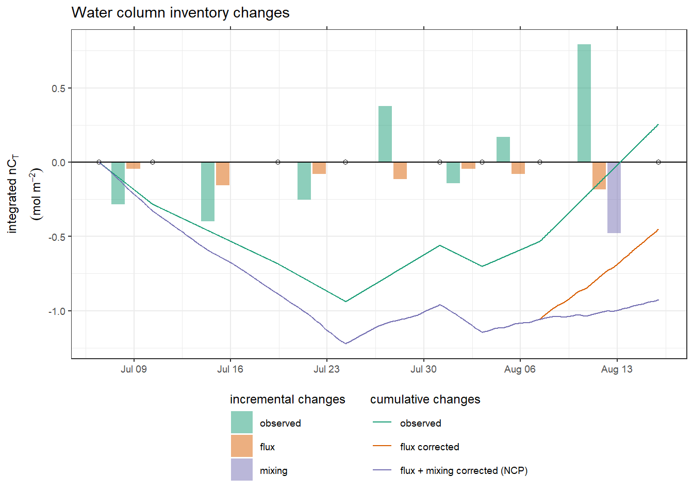
NCP_flux_mix %>%
write_csv(
here::here(
"data/intermediate/_merged_data_files/CT_dynamics",
"tm_NCP_cum.csv"
)
)
NCP_flux_mix_diff %>%
write_csv(
here::here(
"data/intermediate/_merged_data_files/CT_dynamics",
"tm_NCP_inc.csv"
)
)# calculate mixing with deep waters, corrected for air sea fluxes
NCP_mix <- tm_profiles_ID_long %>%
filter(ID == "180815",
var == "nCT",
dep < parameters$i_dep_mix_lim,
dep > parameters$i_dep_lim) %>%
group_by(ID, date_time_ID, date_time_ID_ref) %>%
summarise(value_diff =
sum(value_diff) / 1000 + min(tm_og_flux_dep$flux_cum)) %>%
ungroup()
rm(tm_og_flux_dep)
NCP_mix_diff <- NCP_mix %>%
select(date_time_ID_ref, value_diff) %>%
mutate(var = "mixing")
NCP_flux_mix_diff <-
full_join(NCP_flux_diff, NCP_mix_diff)
NCP_flux_mix <-
full_join(NCP_flux,
NCP_mix %>% rename(mix_cum = value_diff))
rm(NCP_mix, NCP_mix_diff, NCP_flux, NCP_flux_diff, date_180806)
NCP_flux_mix <- NCP_flux_mix %>%
arrange(date_time) %>%
fill(ID) %>%
mutate(
mix_cum = if_else(ID %in% c("180806", 180815), mix_cum, 0),
mix_cum = na.approx(mix_cum),
nCT_i_flux_mix_cum = nCT_i_flux_cum + mix_cum
)
# reorder factors for plotting
NCP_flux_mix_diff <- NCP_flux_mix_diff %>%
mutate(var = factor(var, c("observed", "flux", "mixing")))
NCP_flux_mix_long <- NCP_flux_mix %>%
select(date_time, nCT_i_cum, nCT_i_flux_cum, nCT_i_flux_mix_cum) %>%
pivot_longer(nCT_i_cum:nCT_i_flux_mix_cum,
values_to = "value",
names_to = "var") %>%
mutate(
var = fct_recode(
var,
observed = "nCT_i_cum",
`flux corrected` = "nCT_i_flux_cum",
`flux + mixing corrected (NCP)` = "nCT_i_flux_mix_cum"
)
)
p_inCT <- NCP_flux_mix_long %>%
arrange(date_time) %>%
ggplot() +
geom_col(
data = NCP_flux_mix_diff,
aes(date_time_ID_ref, value_diff, fill = var),
position = position_dodge2(preserve = "single"),
alpha = 0.5
) +
geom_hline(yintercept = 0) +
geom_point(data = cruise_dates, aes(date_time_ID, 0), shape = 21) +
geom_line(aes(date_time, value, col = var)) +
scale_x_datetime(date_breaks = "week",
date_labels = "%b %d",
sec.axis = dup_axis()) +
scale_fill_brewer(palette = "Dark2", name = "incremental changes") +
scale_color_brewer(palette = "Dark2", name = "cumulative changes") +
labs(y = expression(atop(integrated ~ nC[T], (mol ~ m ^ {
-2
}))),
title = "Water column inventory changes") +
guides(guide_colourbar(order = 1)) +
theme(
axis.title.x = element_blank(),
axis.text.x.top = element_blank(),
legend.position = "bottom",
legend.direction = "vertical"
)
p_inCT
NCP_flux_mix %>%
write_csv(
here::here(
"data/intermediate/_merged_data_files/CT_dynamics",
"tm_NCP_cum.csv"
)
)
NCP_flux_mix_diff %>%
write_csv(
here::here(
"data/intermediate/_merged_data_files/CT_dynamics",
"tm_NCP_inc.csv"
)
)7 Open tasks / questions
- clean and harmonize chunk labeling (label: plot, 1 plot per chunk, etc)
- included removed stations in coverage plot
- Significance of changes in AT for calculated nCT changes
- Calculate AT-S ratios, reconstruct AT profiles, calculate true nCT profiles, normalize nCT profiles to mean AT
- demonstrate strong permanent thermocline at around 25 m
sessionInfo()R version 4.0.2 (2020-06-22)
Platform: x86_64-w64-mingw32/x64 (64-bit)
Running under: Windows 10 x64 (build 18363)
Matrix products: default
locale:
[1] LC_COLLATE=English_Germany.1252 LC_CTYPE=English_Germany.1252
[3] LC_MONETARY=English_Germany.1252 LC_NUMERIC=C
[5] LC_TIME=English_Germany.1252
attached base packages:
[1] stats graphics grDevices utils datasets methods base
other attached packages:
[1] LakeMetabolizer_1.5.0 rLakeAnalyzer_1.11.4.1 sp_1.4-2
[4] tibbletime_0.1.6 zoo_1.8-8 lubridate_1.7.9
[7] scico_1.2.0 metR_0.7.0 marelac_2.1.10
[10] shape_1.4.4 seacarb_3.2.13 oce_1.2-0
[13] gsw_1.0-5 testthat_2.3.2 patchwork_1.0.1
[16] forcats_0.5.0 stringr_1.4.0 dplyr_1.0.0
[19] purrr_0.3.4 readr_1.3.1 tidyr_1.1.0
[22] tibble_3.0.3 ggplot2_3.3.2 tidyverse_1.3.0
[25] workflowr_1.6.2
loaded via a namespace (and not attached):
[1] fs_1.4.2 RColorBrewer_1.1-2 httr_1.4.2 rprojroot_1.3-2
[5] tools_4.0.2 backports_1.1.8 R6_2.4.1 DBI_1.1.0
[9] colorspace_1.4-1 withr_2.2.0 tidyselect_1.1.0 compiler_4.0.2
[13] git2r_0.27.1 cli_2.0.2 rvest_0.3.6 xml2_1.3.2
[17] labeling_0.3 scales_1.1.1 checkmate_2.0.0 digest_0.6.25
[21] rmarkdown_2.3 pkgconfig_2.0.3 htmltools_0.5.0 dbplyr_1.4.4
[25] highr_0.8 rlang_0.4.7 readxl_1.3.1 rstudioapi_0.11
[29] generics_0.0.2 farver_2.0.3 jsonlite_1.7.0 magrittr_1.5
[33] Rcpp_1.0.5 munsell_0.5.0 fansi_0.4.1 lifecycle_0.2.0
[37] stringi_1.4.6 whisker_0.4 yaml_2.2.1 plyr_1.8.6
[41] grid_4.0.2 blob_1.2.1 promises_1.1.1 crayon_1.3.4
[45] lattice_0.20-41 haven_2.3.1 hms_0.5.3 knitr_1.30
[49] pillar_1.4.6 reprex_0.3.0 glue_1.4.1 evaluate_0.14
[53] data.table_1.13.0 modelr_0.1.8 vctrs_0.3.2 httpuv_1.5.4
[57] cellranger_1.1.0 gtable_0.3.0 assertthat_0.2.1 xfun_0.16
[61] broom_0.7.0 later_1.1.0.1 viridisLite_0.3.0 memoise_1.1.0
[65] ellipsis_0.3.1 here_0.1